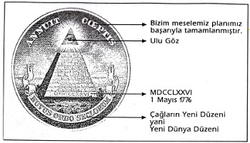
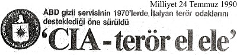
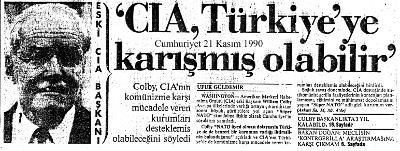
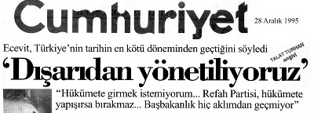
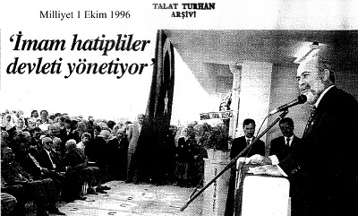
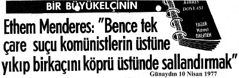

Küresel İhanetin İçyüzü ve
ARAP BAHARI
Talat Turhan
ARAŞTIRMA - İNCELEME:73
Küresel İhanetin İçyüzü ve ARAP BAHARI / TALAT TURHAN
Her hakkı saklıdır. Bu eserin aynen ya da özet olarak hiçbir bölümü, telif hakkı sahibinin yazılı izni alınmadan kullanılamaz.
Genel Yayın Yönetmeni: Ertürk Akşun Editör: Zuhal Doğan Son Okuma: Devrim Yalkut Kapak Tasarım ve Sayfa Tasarım: İlknur Muştu Destek Yayınları:
1. Baskı: Mayıs 2012
© Destek Yayınevi
İnönü Cad. 33/4 Gümüşsuyu Beyoğlu / İstanbul Tel : (0212) 252 22 42
Fax : (0212) 252 22 43
www.destekyayinlari.com
info@destekyayinlari.com
facebook.com/ DestekYayinevi
twitter.com/destekyayinlar
Bu kitabımı kızım Feza’ya
armağan ediyorum.
Talat Turhan
1924 yılında Elazığ’da doğdu. O tarihte babası Elazığ
müddeiumumisi (savcı) idi. Baba tarafı Rize ilinin Çayeli ilçesinin tanınmış ailelilerinden Şerifoğulları’na mensuptur.
Anne
tarafı
Elazığ-Harput’un
tanınmış
ailelerinden
Efendigiller’dendir.
Babasının görevi nedeniyle yurdun çeşitli yörelerinde öğrenim hayatını sürdürdü; 1929 yılında Ardahan’da başladığı ilkokulu, 1935 yılında Zonguldak Gazi Mustafa Kemal İlkokulu’nda tamamladı. Zonguldak’ta başladığı ortaokul yaşamını, 1939 yılında Elazığ’da bitirdi. Daha sonra 1940 yılında İstanbul-Çengelköy’de bulunan Kuleli Askeri Lisesi’nde öğrenimini sürdürdü. İkinci Dünya Savaşı’nın başlaması nedeniyle İstanbul’un seyrekleştirilmesi planı çerçevesinde okulu Konya’ya taşındı, devam eden öğrenimini 1942 yılında orada tamamladı. Mezuniyetinde tarih dersi birinciliği nedeniyle ödüle layık görüldü. O dönemin askeri liseyi bitirdikten sonra Samsun’da 15. Topçu Alayı’nda askerlik stajını tamamladı.
Staj sonrası 1942-1944 yılları arasında Ankara’da Harp Okulu’nda öğrenimini tamamladı ve 30 Ağustos 1944’te asteğmen rütbesiyle Türk Silahlı Kuvvetleri’ne katıldı. 1944
yılında Harp Okulu mezuniyeti sonrasında başarı durumuna göre meslek seçimi yapabildiği için Topçu sınıfına ayrıldı.
Daha sonra 1944-1946 yılları arasında Polatlı’da bulunan Topçu Okulu’nda mesleki öğrenim gördü. Asteğmenliğinden 6 ay sonra teğmenliğe yükseldi. Okulu bitirdiğinde Adapazarı’nda bulunan 17. Tümen’e bağlı 17. Koşulu Topçu Alayı’na (Atlı) atandı. Bu arada bir süre Kandıra’da görevini
sürdürdü. Bir yıl orada görev yaptıktan sonra Şark (Doğu) hizmeti için 156. Ağır Topçu Taburu Müstakil Takım komutanı olarak Erzurum’un Tafta köyüne atandı ve daha sonra sırasıyla şu görevlerde bulundu: 1948: Topçu Okulu emrinde Müstakil Topçu Takım komutanı (kıtayla naklen), Polatlı; 1948-1950: topçu üsteğmen rütbesiyle Erzurum-Gez köyü ve Aziziye Tabyası 13. Uçaksavar Alayı topçu takım komutanlığı ve batarya komutanlığı (vekâleten); 1948-1949: kursiyer olarak Uçaksavar Okulu Ağır Uçaksavar M-8
Komuta Aleti ve SCR 584 Radarı Kursu, Tuzla; 1950: 1.
Uçaksavar Alayı Topçu Takım komutanı, İstanbul-Rami, Bandırma (kıtayla naklen); 1950: Yedek Subay Taburu takım komutanı, Tuzla Uçaksavar Okulu; 1950: kursiyer (kurs birincisi) olarak İzmir-Gaziemir Ulaştırma Okulu Motor ve Bakım Kursu; 1950-1951: Üçüncü Bakım Kademesi komutanı, Öğretmen Subay Kursu, Tuzla; 1951-1953: Genel Konular Bölümü motor öğretmeni, Tuzla Uçaksavar Okulu (orada Motor Bölümü kürsüsünü kurarak ilk bölümün öğretmenliğini yaptı); 1953: Kara Harp Akademisi sınavı giriş birincisi, İstanbul-Yıldız; 1953-1954 Kore Tugayı (5.
kafile) Uçaksavar Batarya komutan yardımcısı, Ankara ve Seferihisar (Türkiye’de hazırlık); 1954-1955: topçu yüzbaşı rütbesiyle Kore Tugayı (5. kafile) Uçaksavar Batarya Komutan yardımcısı (Batarya Birleşmiş Milletler Birincisi) Kore; 1955-1956: Uçaksavar Alayı 187. Hafif Uçaksavar Batarya komutanı, İstanbul-Orhaniye Kışlası; 1955: kursiyer olarak Polatlı Topçu Tekâmül Kursu; 1958-1959 2. Ordu Karargâh Harekât Başkanlığı kurmay stajyeri topçu binbaşı Konya; 1959-1960: 39. Tümen Topçu Komutanlığı Ağır Topçu Tabur komutan yardımcısı. (kurmay binbaşı), Dörtyol; 1959-1960 39. Tümen Harekât ve Eğitim Şube müdür vekili,
İskenderun; 1960: Genelkurmay Harekât Başkanlığı Plan Harekât Dairesi Plan Kısım amiri, Ankara; 1960-1962: Milli Savunma Bakanlığı Kara emir subayı, Ankara (1960 yılında atandığı bu görevinde 30 Ağustos 1962 tarihinde yarbaylığa terfi etmiştir); 1960-1962: Milli Savunma Bakanlığı Özel Kalem müdür vekili, Ankara; 1961-1962: Ordu Dil Okulu İngilizce bölümü. (9 ay süreli bu kurs devam ederken 22
Şubat 1962 başkaldırı girişimi meydana gelmiş, bu olay nedeniyle kursu tamamlamadan ilişiği kesilerek Afyon Batı Menzil Komutanlığı Plan ve Prensipler Şubesi Kısım amirliğine sürgün edilmiştir. Daha sonra Danıştay’da dava açarak, dil kursuna bıraktığı yerden devam etme hakkını geri kazanmıştır.) 27 Mayıs 1960’tan sonra Ankara’da Milli Savunma Bakanlığı Özel Kalem müdürlüğü görevinde bulunduğu evrede Silahlı Kuvvetler içindeki dalgalanmalarda yer aldı. O dönemden itibaren ülkemizin yakın tarihine ilişkin olaylara devrimci inançları doğrultusunda doğrudan ya da dolaylı olarak katıldı. Silahlı Kuvvetler Birliği’ne üye oldu.
Özellikle Ankara’daki görevi sırasında ABD emperyalizmin güdümüne sokulan ülke düzeninin kokuşmuşluğunu algıladı.
Bu tavrı düzene egemen olan güçler tarafından gözden kaçırılmadığı için, 22 Şubat 1962 olaylarına katılmış olma bahanesiyle Afyon’a sürgün edildi.
Daha sonra Genç Kemalistler Ordusu adlı bir dava nedeniyle Mamak Askeri Ceza ve Tutukevi’nde 1963 yılında 4 ay 17 gün tutuklu kaldı ve 3,5 yıl askeri yargıda yargılandı.
Dava devam ederken hiçbir gerekçe gösterilmeksizin 42 sayılı yasayla emekliye ayrıldı. Emekli edildiğinde devresinde bulunan kurmay subaylar arasında kıdem bakımından birinci konumda bulunuyordu.
Kurmay yarbay rütbesiyle emekliye ayrıldığı 1964 yılından bu yana kendisine yapılan tüm iş önerilerini reddedip düzen dışında kalmayı yeğledi ve 1965 yılında yazın yaşamına başladı.
Egemen güçler peşini bırakmadılar. 1972-1974 yıllarında Bomba Davası adlı üst düzey cuntacı generallerin birbirleriyle olan makam ve çıkar çatışmaları üzerine düzenlenen komplo bir davanın baş sanığı olarak Ziverbey İşkence Köşkü’nde bir ay işkence gördü ve iki yılını Selimiye Askeri Ceza ve Tutukevi’nde geçirdi. İdam istemiyle yargılandığı bu davada af kabul etmemesine karşın, politik durumdaki değişime uyarlı olarak davası örtbas edildi. 1973 yılında cezaevinde yatarken “kontrgerilla işkencecileri” hakkında TBMM
araştırması isteyerek bu konuyu ülke gündemine soktu.
1990 yılında İtalya’da patlak veren Gladio gizli örgütü, öne sürdüğü tüm savları doğrulamasına karşın, TBMM’deki bu konuyla ilişkin tüm girişimler bugüne kadar sonuçsuz kalmıştır. Susurluk Kazası’yla da daha önce öne sürdüğü savlar Türkiye yönünden doğrulandı.
46 yıl boyunca, çeşitli gazete ve dergilerde politik, stratejik, istihbarat ve güvenlik örgütleri, insan haklan, olağanüstü yargı, kontrgerilla, terörizm ve emperyalizmin örgütleri vb.
yakın konularda araştırma ve inceleme türü dizi yazıları yayımlandı. Özellikle 1990’dan beri ilgi alanı içine giren konularda 17’si yurtdışında olmak üzere 120’ye yakın konferans, açıkoturum, panel vb. gibi etkinliklere katıldı. Bazı özel TV kanallarındaki belgesel ve söyleşilerde yer aldı.
Basın toplantıları düzenledi.
Kitapları
• Bomba Davası / Savunma-2
• Özel Savaş, Terör ve Kontrgerilla
• Kontrgerilla Cumhuriyeti
• Doruk Operasyonu
• Emperyalizmin Bataklığında İstihbarat Örgütleri
• Çeteleşme
• Mehmet Eymür (Orhan Gökdemir’le birlikte)
• 27 Mayıs 1960’tan 28 Şubat 1997’ye
• Devrimci Bir Kurmay Subayın Etkinlikleri
• 30 Ağustos
• Atatürk’ün Yarbayı
• Genç Kemalistler Ordusu
• Baskın / 11 Eylül
• Küresel Çete
• Mont Pelerin / Küresel Sermayenin Beyni (Mehmet Eymen’le birlikte)
• Derin Devlet
• Bohemian Club
• Küreselleşmenin Şifresi
• İç Savaşın MİT’çisi Eymür
• 12 Mart Cezaevinden Mektuplar
• Faşizme Karşı Dilekçeler
• Kontrgerilla Düzen
“Her zaman, her yerde en güçlü olanlar hırsızlardır.”
“İyice bilin ki şunu, bir değil binlerce ölüm gerekirse bile hiç mi hiç değiştirmeyeceğim yolumu.”
“Devletteki haksızlıkları ve yolsuzlukları, eğrilikleri önlemek isteyen bir kimse canını kurtaramayacaktır.”
“İnsanları öldürmekle sürdürdüğümüz kötü yaşamın kınanmasına
engel
olacağınızı
sanıyorsanız
yanılıyorsunuz.”
“Ben gerçekten, kamu düzeni ve üstün çıkarı (egemen sınıfların çıkarı) için tehlikeliydim. Çünkü doğruyu söylemekten daha büyük alçaklık ve ihanet yoktur!”
Elinizdeki kitap 12 Haziran 2011 seçimlerinden önce basılmak üzere yayınevine verildi. Aslında seçimlerden bir ay önce bu kitabı yayımlamayı düşlemiştim.
1972–75 yılları arasında “Bomba Davası” adlı yapay bir davanın baş sanığı seçilmiş, işkence görmüş, hiçbir dönemle kıyaslanamayacak iki yıllık bir cezaevi deneyiminden sonra, yargılanma
tamamlanmadan
salıverilmiştim.
“Bomba
Davası”nın senaryosuna göre, Gnkur. Bşk. Org. Faruk Gürler, Hv. K.K. Org. Muhsin Batur, Ora. Kemal Kayacan iktidarı ele geçirmek için Marksist-Leninist bir cunta oluşturmuşlardı.
Bana ise bu cuntanın iktidara gelmesine katkı vermek ve elverişli ortam hazırlamak için, sivil kesimin İstanbul bölgesi liderliği görevi verilmişti(!) MİT’e göre, Türkiye’de terör ve anarşiyi yönlendiren altı kişinin önde geleniydim. Dava, tüm zorlamalara karşın, tertip düzenleyen karşıdevrimci güçlerin senaryolarına uymadı... Ek iddianameyle sanık ilan edilen Gnkur. Bşk. Gürler, Hv. K. K. Batur, Dz. K. K. Kayacan
“Bomba Davası”na günün dengeleri içinde getirilemediler.
Tertip senaryosu çöktü.
Bu iğrenç senaryoda başat rol alan işkenceyle dava tezgâhlayan Org. Faik Türün ve Tümg. Memduh Ünlütürk hakkında “Parlamento Araştırması” isteminde bulundum. Yıl 1973... Aradan 38 yıl geçti. TBMM’de sayısız komisyonlar kuruldu. Ama ne yazık ki günümüzde, “Abdi İpekçi cinayeti”
bahanesiyle “Kontrgerilla” gündeme getirilip seçim malzemesi yapılabiliyor.
NATO güdümünü kabullenen iktidarlar ABD’nin kontrolü altında bir “yeraltı örgütü”nün faaliyetlerini denetleyemezler.
Bu nedenle darbeler, provokasyonlar, katliamlar, siyasi cinayetlerin failleri bulunamıyor. “Mış” gibi yazılıp kamuoyu yanıltılıyor.
1989 yılında Los Angeles Times bir makalesinde “Papa suikastı”ndan söz etti. Olumlu anlamda bana da yer verdi.
Kuşkusuz M. Ali Ağca’nın gizemli serüveni çözülemediği sürece Abdi İpekçi ve Papa suikastı aydınlanamaz. Ancak Ağca’nın Bulgaristan’da kaldığı süreç mercek altına alınabilseydi, bazı ipuçlarına ulaşılabilirdi. Örneğin: Bulgaristan’da Ağca’nın B. Ç. ve A. U. adlı iki mafya babasınca
finanse
edildiği
sürekli
yazıldı.
Ağca,
Bulgaristan’da iken bir istihbarat örgütü yetkilisinin orada görevli bulunması rastlantı olabilir mi?
Her taşın altında bu ünlü istihbaratçıyı görebilirsiniz.
Ziverbey İşkence Köşkü’nde, Kızıldere katliamında, operasyonlarda, ABD’de, Türkiye’de. Ama kimse bu zata dokunamıyor...
Emperyalistler, devrimleri ve devrimcileri düşman sayarlar.
Kuşkusuz her ülkede devrim, bazı sınıf ve katmanların çıkarını bozar. Bu nedenle emperyalistler her ülkede karşıdevrimcilerle işbirliği halinde isyanlar çıkartıp ülke düzenlerini kendi çıkarlarına uyumlu hale getirmeye çalışırlar.
Cumhuriyet devrimlerine başkaldıranları emperyalistler destekliyorlardı. Günümüzde de “Turuncu Devrimler” ve
“Arap Baharı”nın arkasında “küresel çete”nin parmağı var...
İslam coğrafyasına ve dinine yönelik tarihin yaşadığı en büyük “karşıdevrim operasyonu”, ABD’nin çıkarına uygun olabilir. Ancak bazı bahanelerin ardına sığınıp bu “küresel hıyanete” ortak olup, Atatürk Cumhuriyeti’ne saldırmak İslam’la bağdaşmaz...
Demokrat Parti (DP) iktidarı, 1958 yılında “Lübnan İç Savaşı” nda Müslümanlara değil Hıristiyanlara silah ve cephane yardımı yapıyordu.
Günümüzde de süregelen “Haçlı Savaşları”na Libya’da destek olan tek İslam ülkesi ne yazık ki Türkiye’dir...
NATO’yu
sorgulayamadan
bu
kısırdöngüden
kurtulamayacağımız yıllardır yazılıyor. Her manada bağımlı olmayı ilke olarak benimsemiş iktidarlar ne NATO’yu sorgulayabilir ne de emperyalist dayatmalara karşı çıkabilirler.
1990 yılında İslamı düşman ilan eden ABD, kendi çıkarına uyumlu bir İslam yaratmak için milyarlarca doları boşuna harcamadı... Bu tarihsel çelişki ve utançtan kurtulmanın tek yolu “tam bağımsızlık” ve “Özgürlük ve bağımsızlık benim karakterimdir” diyen anlayışa geri dönmektir. Oysa, 60 yıllık süreçte dışarıdan beslenen tarikat, cemaat, etnik gruplar, STK’lar “Kemalist”lere savaş açacak kadar güçlendiler. Karşı devrim bir süreç olduğu kadar devrim de bir süreçtir. Tarihi dinamikleri bu bilinçle değerlendirmeliyiz.
Bırakın işbirlikçileri, hâlâ ABD’nin Irakişgaline katkı vermediğimize yakınan, dönemlerindeki başarısızlıkları bu olaya bağlayan NATO’cu eski genel kurmay başkanları var.
1924 yılında doğdum. Atatürk döneminde bağımsız bir ülkede yaşamak onurunu tattım. 1937 yılında Atatürk, Diyarbakır’ı ziyarete geldiğinde, ortaokul ikinci sınıf öğrencisiydim. İstasyon Meydanı’nı dolduran coşkulu halkın, Atatürk’ün şehirden ayrılmasını bir saat geciktirecek ölçüde sevgi tezahüratı yaptığı dönemde ben de oradaydım.
Beceriksiz, basiretsiz işbirlikçi politikalar yüzünden ülkemiz nereden nereye geldi...
Özetle devrimi yaşadım, karşıdevrimi gördüm, ülkemin
“babalar gibi satılmasına” tanık oldum. Tepki koydum.
Sürgünler, işkenceler, hapishaneler gördüm. 47 yıldan beri emekliyim. 46 yıldır yazıyorum. Bu kez de beni engellemek isteyenler tazminat davaları açıp susturmaya çalıştılar.
1963 yılından bu yana Türkiye ve hatta dünyada tam 48 yıl sürekli yargılanan tek kişi olduğumu iddia ediyorum. Şu anda da iki davam Avrupa İnsan Hakları Mahkemesi’nde (AİHM) kabul gördü.
Yargıtay aşamasında bulunan bir tazminat davası aleyhimde sonuçlanırsa, onu da AİHM’e taşıyacağım.
Bozuk düzenlerde hak, hukuk, özgürlük ve demokrasinin bir anlam ifade etmediğini yaşayıp öğrendim. Ne yazık ki hakkımı AİHM’de aramak zorunda bırakıldım.
ABD güdümünde, NATO’cu ve TOTO’cu iktidarların düzenine karşı çıkmanın bir diyeti vardır. O diyeti fazlasıyla ödedim. Bu ülkede her dönemde kitap yazanlar suçlandı.
Şimdilerde kitapla bomba eşdeğer tutuluyor. Eski bir bombacı (!) olarak bu devirde susmak bana yakışmazdı. Her ne kadar
birileri misyon yüklenenleri potansiyel suçlu sayıyorsa da ülkeme olan sevgim beni yeniden yazmaya yöneltti... Ama bunu yapmak için ne yaşım ve sağlığım müsaitti. Ocak ayından beri “lenf kanseri” tedavisi görüyor, kemoterapinin tüm olumsuzluklarıyla boğuşuyordum...
Şubat ayında geçen yıldan kalan bir kitabımı tamamladım.
Ancak küreselleşen dünyada mazlum uluslara yönelik ikinci sömürgeleşme süreci “Arap Baharı” diye başlatıldı. Yine bu döneme rast getirilen “Wikileaks Türkiye Belgeleri” her kademedeki işbirlikçilerin ipliğini pazara çıkardı. Hatta Mekke’yi 10 milyon dolara Hıristiyanlara pazarlamak isteyen Müslüman din adamı ismen açıklandı. Müslüman argümanları öne çıkarıp siyaset yapanlardan, küresel ve cemaat medyası için özüne girmekten özenle kaçındılar. Tüm bu gelişmeleri değerlendirmek bana düştü. Bu halimle mart, nisan ve mayıs aylarında günde 12-16 saat çalışmak zorunda kaldım. Kimse başkasına
yazdırdı
demeye
kalkmasın
el
yazılı
müsveddelerim elimde duruyor. Yüzlerce tanığım var.
1990 yılında Zaman gazetesine vermiş olduğum bir demeçte G. H. Bush’un “İslam’ı düşman” ilan ettiğini ilk kez kamuoyuna duyurdum.
Gerek baba ve gerekse anne tarafından cami yaptırmış bir aileden geliyorum. Çayeli’ndeki “Şerifli Camii” Şerifoğlu ailesine, bunun gibi Elazığ-Harput’taki “Ağa Camii”, Efendigil ailesince yaptırılmıştır.
1964 yılında emekliye ayrıldıktan hemen sonra yazmaya başladım. Elinizdeki kitapla 30’a yaklaştım; 100 kitapla ölmek isterdim ama kendi olanaklarımla bu kadarını
yapabildim. Ne Soros ne de AB fonlarından beslendim. O
nedenle de kalemimi özgürce kullanabiliyorum...
1973 yılından beri NATO’nun yeraltı örgütü kontrgerilla ve Gladio’yla mücadele ediyorum. Bu konuda bir ilki başardığım içte ve dışta genel kabul gördü. Kitaplarımda NATO
güdümlü, ABD’nin finanse ettiği bir “yeraltı örgütü”nün nasıl cinayet işleyeceğini resmi ABD belgelerine dayanıp açıklıyorum. Ama küresel güdümlü iktidarlar NATO ve ABD’yle hesaplaşamayacak kadar güçsüz olduklarından hâlâ siyasi cinayetler ve darbeler üzerinden siyasi rant sağlamaya çalışıyorlar. Yıllar önce açıkladığım bu konulardaki gerçekleri de bu kitapta bulabilirsiniz.
1977’li yıllarda işbirlikçi iktidarları çete olarak kabul ettiğimden aylarca “iktidarların çeteleşmesi” konusunu yazdım.
1999 yılında yazdığım kitabın adı Çeteleşme idi.
Bu kitabımda küreselleşmeci Siyonist yapılanmanın köklerine inmek olanağını buldum. Bu oluşumda yer alan kişileri ve işbirlikçilerine ismen ulaştım. Bir kısmını açıkladım.
2004-2009 yıllarında “ABD derin devleti”ni ve örgütlerini çözmeye çalışan kitaplar yayımladım. “Küresel Çete, Bohemian Club, Mont Pelerin, Derin Devlet, Kontrgerilla Düzeni ve Küreselleşmenin Şifresi diye.
Sonuçta tepesinde Rockefeller ailesinin bulunduğu ve Rotschild ailesinin de söz sahibi olduğu bir gizli örgütlenmenin
Anglosakson
temelinde
“Çokuluslu
şirketler”in söz sahibi olduğu bir dünyayı 1920 yılından beri şekillendirmeye çalıştıklarını saptadım ve yazdım.
Kuşkusuz emperyalistler “dünya egemenliği” hayalini gerçekleştirmek için yandaşlarını da seçerler.
Kapitalizm, kapital birikimi olan sömürgeci ülkelerin çıkarlarına hizmet eden bir düzendir. Diğer ülkeler “serbest piyasa”cılıkla ancak emperyalizmin değirmenine su taşıyabilirler...
Ama her ülkede bu işlevi yapan işbirlikçi bulunması kolay olduğu için ABD, 1954 yılından beri seçtiği kişileri, denetim altına aldığı medyayla parlatıp bize seçtiriyor.
Küresel piramidin tepesinde işadamları var, onların altında politik liderler, dışişleri bakanları, merkez bankası müdürleri, akademisyenler ve medya mensupları yer alıyor. Bu oluşumda yer alanları sürekli açıklıyorum. Bu kitapta da bulabilirsiniz.
Özellikle 11 Eylül Baskını’nı bahane eden ABD, uluslararası tüm kuralları takmaksızın İslam ülkelerinin sahip olduğu yeraltı değerlerine el koyup, İslam’ı ılımlaştırmakla da yetinmeyip Hıristiyanlaştırmayı 3. milenyum hedefi olarak önüne koyduğu bir dönemde “NATO’nun Libya’da ne işi var?” demenin tam zamanı olduğunu düşünüyorum.
“Arap Baharı”, ABD’nin BOP’una inanılmaz boyutta katkı veren “karşıdevrimci” bir süreç olarak sürdürülüyor.
Arkasında ABD, Almanya, İngiltere, Kanada, Avusturya, Fransa, Danimarka, İspanya ve İsveç‘in bulunduğu 30 yıldan beri faaliyet gösteren Siyonist tandanslı C.C.C. ve W.H.S.
kuruluşlarınca denetlenen “hacker”lar örgütü ve “sosyal
ağlar” sayesinde ABD, hem “Haçlı Savaşları”nı hem de
“2’nci sömürgecilik süreci”ni risk almadan, müttefiklerini kendine ortak ederek sürdürüyor. Ülkemiz de ne yazık ki bu sürece katkı veriyor.
Bu kitap açıkladığım nedenlerle başlangıcında tasarladığım plana bağlı kalmaksızın, dış ve iç gündem son güne kadar izlenilerek yazıldığı için kokteyl bir kitap oldu. Geçmişten geleceğe değişik konulara yer verdim. Diğer kitaplarımda olduğu gibi “Wikileaks belgeleri” ardındaki örgütleri ve bağlantılarını ilk kez açıklamak bana nasip oldu.
Kitap birbirinden bağımsız bölümler halinde görünse bile
“karşıdevrimci”lerin içyüzünü açıklamaya katkı verirse sevineceğim.
Sıranın bize gelmesini beklemeden bu ülkede yaşayan bütün halklar dışarıdan beslenen işbirlikçilerin dolduruşuna gelmeden
bütünlüğümüze
sahip
çıkmalıdır
diye
düşünüyorum. Bu düşüncemin altını kitapta doldurmaya çalışıyorum. Bir Don Kişot gibi “küresel hıyaneti” karşıma alırken aklıma, çalışma azmime, kültür birikimime, bağımsızlığıma, deneyimlerime ve amatör ruhumdan güç aldım. Ancak savlarımı kanıtlamak için yaklaşık 850 kaynak ve açıklamaya yer verdim. Bu kadar dip notun okuyucuları sıkacağını biliyorum. Bu nedenle ilk kez kitabı dipnotlarına bakmaksızın okumanızı öneririm. Beğeninizi kazanırsa ikinci kez okuduğunuzda kaynakçaya bakılmasını öneriyorum. Bu kitapta yer alan konuların yıllarca ülkemin gündeminde kalacağını biliyorum. Beni izleyecek yazarların işini kolaylaştırmak için, tüm kaynakları açıkladım. Hakkı teslim eden saygın yazarlar gönderme yaparlar.
Saptadığım kadarıyla, daha yaşarken yaklaşık 140 iç ve dış
kaynaklı kitapta bana gönderme yapıldı.
Google’e girip “talatturhan” yazarsanız benimle ilgili lehte ve aleyhte yüzlerce konuya ulaşabilirsiniz. Bunun gibi web siteme (www.talatturhan.com) girip tüm yazdıklarımı, etkinliklerimi görebilirsiniz. Tüm amacım düşüncelerimi halkımla paylaşmak G. Soros ve H. Kissinger’ın düzeninden yararlananlara söylenecek sözümüz yok...
1986 yılından beri sağlık sorunlarıyla boğuşuyorum. Bu süreçte özellikle yeğenim Prof. Dr. Canan Efendigil Karatay’ın
inanılmaz
katkıları
sayesinde
yaşamımı
sürdürebildim. Son dönemde kanser tedavisinde Şişhane’deki T.C. İstanbul Bilim Üniversitesi Onkoloji Merkezi’nde Prof.
Dr. Reyhan Küçükkaya ve Uz. Dr. Fehmi Hindilerden ve tüm çalışanların üstün çabaları olmasaydı, bu kitap yazılamazdı.
Kendilerine teşekkür borçluyum.
Ustalık eserimi yazdım diye bir iddiam yok. 87 yaşımda kanserle boğuşurken ancak bu kadar yazabildim.
Bugüne kadar birçok yayıneviyle çalışmak zorunda kaldım.
Onlara katkıları için teşekkür ederim. Ancak ilişkimi kestiğim günden beri telif ödemeyen yayınevleri 1992’li yıllarda ve 2000’li yıllarda yayımlanan kitaplarımı birçok internet sitesinde satıp kâr sağlamaya devam ediyorlar. 2004 yılından bu yana birlikte çalıştığım yayıneviyle de zorunlu nedenlerle ilişkimi kestim.
Bundan sonra kitaplarımı basıp, internet sitelerinde satmaya devam ederlerse yasal haklarımı kullanmak zorunda kalacağımı bildirmek istiyorum.
Bu kitabın hazırlanmasında bana her manada teknik yardım yapan torunum Bora ile dostlarımı sevgiyle anıyorum.
Destek Yayınevi’ne de bu kitaba katkıları için teşekkür ediyorum.
Hoşça kalınız.
Talat Turhan
8 Mayıs 2011
Harput Ağa Camii
Cami restorasyonu esnasında aslına sadık kalınmamıştır.
Şerifli Camii
Rize-Çayeli
Diyarbekir istasyon binası, terasın köşesinde Atatürk O tarihte Diyarbekir Ortaokulu’nda ikinci sınıf öğrencisiydim. Fotoğrafta görünen aracın tamponuna çıkarak istasyon meydanını dolduran halkla birlikte uzun süre Ata’mızı görmek bahtiyarlığını yaşadım.
15 Kasım 1937
ABD Senatörü Albert J. Beveridge
“Amerikan Cumhuriyeti, tarihinin en üstün ırkının kurduğu
bir
cumhuriyettir.
Tanrı
tarafından
yönlendirilen bir devlettir. Bu cumhuriyetin liderleri de yalnızca devlet adamı değil, aynı zamanda Tanrı’nın peygamberleridir.” (1889)
— ABD belgeleriyle ABD Emperyalizminin Doğuşu, Prof. Dr. Türkkaya Ataöv.
— Senato’da yapılan konuşma (27 Nisan 1889).
ABD Başkanı Franklin Roosevelt
“İşin gerçeği şu ki, büyük merkezlerdeki bir finans unsuru ta Andrew Jackson’ın günlerinden bu yana yönetime sahip olmuştur.” (1933)
Kore Askeri Danışman Gurubu Komutanı
yabancı ordular için düşünceleri:(*)
“Komutanı bulunduğum 500 kişilik, savaşta pişmiş
askerlerden oluşan grup, bizim adımıza kurşun atacak 100.000 kişinin nasıl savaşa hazırlanacağını kanıtlamıştır, bunlar iyiden iyiye eğitilmiştir...
Kore’de Amerikan vergi yükümlüsünün, bu ülkedeki yatırımlarının bekçi köpeği olan bir yerli ordu bulunmaktadır ve bu kuvvet en az giderle en çok sonucun
nasıl
alınabileceğini
pek
güzel
örneklemektedir.” (1950)
(*) New York Herald Tribune’ den aktaran: P. Baran “Büyümenin Ekonomik Politiği”, 5 Haziran 1950.
Başkan Kennedy’nin ABD yardımının amacı hakkındaki görüşü:(*)
“Yardım, dünyayı denetleme yöntemlerinden biridir.
ABD’ye yandaş, hükümetleri iktidarda tutmayı, uluslararası şirketlerin çıkarlarına engel olacak girişimleri önlemeyi, etki alanındaki ülkelerin kalkınma programlarını AID’nin önerileri ve IMF, Dünya Bankası yoluyla denetlemeyi, bu ülkelerin ABD’ye olan bağımlılıklarını sürekli kılacak bir denetim.” (1962)
(*) Oltadaki Balık Türkiye, M. Emin Değer, Çınar Yayınları, 1993.
IMF= International Monetary Fund (Uluslararası Para Fonu).
WB= World Bank (Dünya Bankası).
AID=Agency for International Development (USAID).
ABD Başkan Yardımcısı Humphrey:(*)
“Askeri bakımdan, önemi barutun keşfiyle kıyaslanabilecek yeni ve en cüretkâr bir saldırı biçimiyle
karşı
karşıyayız.
Ulusal
kurtuluş
savaşlarından söz ediyorum! Bu yeni ve karmaşık harp biçimi, güvenliğimiz için belli başlı bir tehlike oluşturmuştur.” (1965)
(*) West Point Harp Okulu’nda yaptığı konuşma. ) ABD, Senatör Roman Hruska (Kleindienst Soruşturması): (*)
“Amerika’daki bütün seçim kongreleri iş kurumları tarafından satın alınmaktadır ve bu odadaki herkes bunu bilir.”
(*) Egemen Devlet, ITT-Anthony Sampson, Koza Yayınları, 1974.
ABD
ABD’nin Türkiye’ye Bakışı(1) ABD Başkanı Wilson (5 Ağustos 1919):
“Türkiye’yi parça parça edelim. Türkiye, haritadan silinmelidir.”
Allen Dulles (29 Eylül 1922) [Eski CIA Şefi]:
— “Mustafa Kemal’e karşı sert bir tutum takınılmalıdır...”
— “Gelecekte bir istikraz için başvurabilirler...”
— “Eğer Türkiye, hiçbir zarar görmeden devletlere kafa tutmakta devam eder, kapitülasyonları kaldırır ve İstanbul’a yerleşirse, bu yalnız Ortadoğu’da değil, Avrupa’da da barışı tehlikeye atacaktır.”
THE NEWYORK TIMES (2 Ağustos 1920):
“Avrupa’dan süpürülen Türklerin dünya siyaset sahnesinden de, bir daha dönmemek üzere silinip gitmesi başlıca dileğimizdir.”
THE NEWYORK TIMES (21 Şubat 1922):
“Ortadoğu’daki Amerikan çıkarlarının genişletilmesi için sınırsız fırsatlar bizi beklemektedir. Balkan ülkelerinin ve Osmanlı İmparatorluğu’nun zengin doğal kaynaklarına henüz el sürülmemiş olup, madenlerin işletilmesi ve demiryollarının yapımı gibi en çekici iş alanları tamamen boş bulunmaktadır.”
THE NEWYORK TIMES (2 Ekim 1922):
“Anadolu’daki savaşın Türklerin zaferiyle son bulması yakın tarihin en korkunç olayıdır. Korkunç Türk bütün vahşetiyle yeniden sahneye çıkmıştır.”
THE NEW-YORK TIMES (13 Ekim 1922):
“Türkiye’deki Amerikan çıkarlarını üç ana konu etrafında toplamak mümkündür:
Birinci
konu,
mevcut
ticari
anlaşmaların
ve
kapitülasyonların korunmasıdır.
İkinci konu , ülkedeki Hıristiyan azınlıkların haklarının garanti altına alınmasıdır.
Üçüncü konu, misyonerlerimizin ülke sınırları içinde serbestçe faaliyet göstermesini sağlayan antlaşmaların sürdürülmesidir...
Amerika Birleşik Devletleri Hükümeti Kapitülasyonların kaldırılmasına karşı çıkmaya kararlıdır.”
THE NEW-YORK TIMES, Prof. Earle’nin kanısıyla da doğrulanmaktadır:
— “Misyonerler ve din adamları, dünyanın hiçbir ülkesinde Türkiye’deki kadar emperyalizme hizmet etmemişlerdir.”
ASIA, Lewis Heck (Ocak 1920):
— “İstanbul şehri, yakın gelecekte Amerikalı tüccar ve işadamları için çok önemli bir merkez niteliğini kazanabilir...”
— “Amerikan misyonerlerinin ve eğitim kurumlarının Türkiye’de yaratmış olduğu olumlu hava bu bölgeye ihracat yapacak işadamlarımıza büyük imkânlar sağlamaktadır.
— 1914 yılında Türkiye’de 627 Amerikan okulu bulunmakta ve bu okullarda 34.000 öğrenci okumaktaydı.”
— “İstanbul gibi büyük merkezlerde Amerikan bankalarının kurulmasını ve ticari şirketlerin kendi acentalarını açmalarına öneriyor. “Büyük yatırımların ise ancak bölgenin siyasi
geleceği
açıklığa
kavuştuktan
sonra
gerçekleşebileceğinden” söz ediyor.
FOREIGN AFFAİRS, Prof. Philip Marshall Brown (15
Haziran 1923):
— KAPİTÜLASYONLAR
“Çeşitli misyonerlik örgütleri ile diğer yabancı hayır kuruluşlarının, dini ve siyasi propaganda merkezleri olarak kullanılmış olduğu da bir gerçektir.”
“ABD çıkarları gereği, bu konularda en yakından ilgilenmesi gereken ülkedir. ABD’nin Türkiye’deki misyonerlik kurumları, okullar, hastaneler ve yetimhaneler uzun yıllar, siyasi propaganda merkezleri oldukları yolunda hiçbir şüphe uyandırmadan görev yapmışlardır...”
ASIA, Arnold J. Toynbee (Eylül 1923):
— TÜRKİYE’NİN YENİ İKTİSADİ HEDEFLERİ
“Türkleri bağımsızlıkları ve vatanları uğruna amansız bir savaş vermeye sevk eden, güçlü milliyetçilik duygularından aldığını ve geçici bir heves olmadığını sanıyorum... Türklerin
siyaset alanındaki bu zaferle yetinmeyerek ortaya bir de
‘iktisadi misak’ koymuş bulunmaları son derece ilgi çekici bir gelişmedir.”
ASIA, Arnold J. Toynbee (Ekim 1923):
— ANKARA, TÜRKİYE’NİN MASAL BAŞKENTİ
“Türklerin iktisadi bağımsızlıklarını tehlikeye düşürecek nitelikte tekliflere yanaşmayacakları ve iktisadi kalkınma için bu
fiyatı
ödemektense
kalkınmamayı
yeğleyecekleri
bilinmektedir.”
Kaynakça ve Açıklamalar
(1) ABD Basınında Türk Kurtuluş Savaşı, Osman Ulagay, Yelken Matbaası, 1974.
Tuslog (JUSMMAT) Türkiye’nin Yakın Tarihinin Bir Özeti(1)
Geçmişi eskilere dayanan ve merkezi Ankara’da bulunan, Amerika’nın Turkiye’deki askeri faaliyetlerini koordine eden
“division-level” bir organizasyon. “Bana yakışan kısalıkta”
özet geçmişi şu şekildedir:
Her şey toz bulutu idi.
İkinci Dünya Savaşının bitmesiyle birlikte Ruslar Türkiye’den “Bize üs açmak için yer verin, konuşlanalım, dostluğumuz ilerlesin, ayağımız alışsın” diye bir istekte bulundular. (Aslında Montreux anlaşması uyarınca hak olarak gördükleri “Bulgaristan’ın deniz ticaretini garantiye almak istiyoruz biz” şeklinde bir sebep ileri sürdüler.) Türkiye bu isteği “Haydaa, n’oluyoruz be!” diye tırsarak reddetti. Ama Ruslar baskıyı devam ettirdiler. Yunanistan’da komunist gerillaları Ruslar açık ve seçik olarak desteklemeye başladılar.
12 Mart 1947’de Harry Truman, Kongre’ye “Komünizme karşı bu iki kale ülkeyi desteklemeliyiz” diye konuşma yaptı (Truman Doktrini).
Mayıs 1947’nin sonlarına doğru Kongre 100 milyon dolar yardımı serbest bırakmıştı bile Türkiye için. Hemen akabinde ABD büyükelçisi “Bu kadar para nereye harcanıyor hele bir bakayım ben” diyebilsin diye Ankara’da Joint American
Military Mission for Aid to Turkey (JAMMAT) kuruldu, sonra bunu 1958’de Joint United States Miltary Mission for Aid to Turkey diye değiştirdiler, oldu JUSMMAT.
JAMMAT’ın havacılık birimi (1172d Foreign Mission Squadron ya da diğer adıyla USAFG Türk Hava Kuvvetleri’ne Amerikan uçakları ve uçuş konularında eğitim vermeye başladılar 1948’de. Aynı grup Balıkesir, Diyarbakır, Bandırma, Eskişehir, Merzifon, Batman, Adana (İncirlik) ve İzmir (Çiğli) hava üslerinin de modernizasyonu tasarımı /
inşası konusunda Türkiye’ye bilfiil yardım ettiler.
1948’de Marshall Planı çerçevesinde Amerikalılar Türkiye’ye yapılan yardımı iyice abarttılar. Truman Doktrini sadece askeri yardımı öngörüyordu, Marshall Planı ise savaştan yıkılıp harap olmuş Avrupa’ya her açıdan maddi destek planıydı. İkinci Dünya Savaşı’nda yer almamış
olmasına rağmen Türkiye bu plandan gayet güzel yararlandı.
Bu sayede 1949’da NATO kurulduğunda Türkiye hemen “biz de katılalım” dedi ve çılgın bir lobi çalışmasına başladı.
1950’de patlak veren Kore Savaşı’na (bkz. Aptal Amerikan Başkanlarının Aptal Ajandaları) canı gönülden katılan Türkiye savaşta gösterdiği inanılmaz başarı sayesinde (en çok kayıp veren ülke, en iyi savaşan ülke, en psikopat askerlere sahip ülke, en kahraman ülke) bütün dünyanın beğenisini kazandı ve 1952’de Yunanistan’la beraber NATO’ya kabul edildi. (Sanılanın aksine Avrupa öyle ağzı kulaklarında bayılarak almadı içeri, kan vermemiz gerekti bunun için.) NATO üyeliği çerçevesinde kabul edilen Status of Forces Agreement (SOFA) sayesinde bir sürü Amerikalı Türkiye’ye geldi. Bu SOFA denen şey NATO üyesi bir ülkenin askeri personeli ailelerine ve sivil erkânına başka bir NATO
ülkesinde konuşlanmaları durumunda özel statüler veriyordu.
Türkiye 10 Mart 1954’te SOFA ve buna bağlı birkaç askeri anlaşmaya daha imza atti. Bundan sonra ülkedeki Amerikan varlığı daha da bir artış göstedi. 1959’a gelindiğinde ülkede 20 değişik Amerikan askeri komuta birimi ve bunlara bağlı sivil örgütler bulunuyordu. Sadece JAMMAT (o sıralar artık JUSMMAT) altında 1.200’den fazla Amerikalı çalışıyordu.
1966’da bu rakam 30.000’i geçmişti bile. JUSMMAT
haricinde:
- İzmir’de iki NATO bölge karargâhı (Allied Land Forces Southeast Europe and Sixth Allied Tactical Air Force).
- CENTO (Central Treaty Organization: 1954 Bağdat Antlaşması’ndan doğdu, 1979’da dağıtıldı).
- Bir sürü Amerikan Savunma İletişim Dairesi zakkum çiçekleri.
- NATO Hava Savunma Yer Birim İstasyonları (NATO Air Defense Ground Environment Stations).
- US Army (Amerikan Ordusu).
- US NAVY (Amerikan Deniz Kuvvetleri).
- US Coast Guard (Amerikan Sahil Güvenlik).
- US Air Force (Amerikan Hava Kuvvetleri).
ABD Genelkurmayı (Joint Chiefs of Staff) Nisan 1953’te bu kadar kaotik grubun organizasyon ve idaresini USAFE’ye (United States Air Forces in Europe) verdi. ABD Hava Kuvvetleri Avrupa Şubesi İşletmeleri). USAFE de tuttu bunu 7206. Hava Karargâh Birliği’ne verdi ki kendileri Hellenikon
Hava Üssü’nü, Yunanistan’da konuşlandırmışlardı. 1 Nisan 1954’te şaka olsun diye 7206 ABS’nin bir birimi Ankara’da konuşlandırıldı (A Detachment of the 7206 Air Base Station: 1 subay ve 1 havacı. Bu arkadaşlar Kasım 1954’te Fas Rabat’ta konuşlanmış olan 17. Hava Kuvvetleri tarafından asimile edildiler (abiler bunlar bizim olsun dediler).
15 Mayis 1955’te 17. Hava Kuvvetleri Karargâhı 7217.
Destek Grubu’nu kurdular Ankara’da (1 subay ve 1 havacıya el koyan Fas’taki Hava Kuvvetleri). Bu destek grubuna
“Headquarters the United States Logistics Group” (HQ
TUSLOG) diye sesleniyorlardı o sıralarda. O yılın yaz aylarında (25 Temmuz) 7206 ABS’nin 1. Birliği (Detachment 1 of the 7206 ABS) feshedildi (hani şu Yunanistan’dakilerin Ankara’ya gönderdiği 1 subay ve 1 havacıdan oluşan ve asimile olan birlik) ve 1 Ağustos’ta Ankara’da 5 subay, 39
havacı ve 4 Türk’ten oluşan “7217 Air Base Squadron”
kuruldu. (Fas’taki asimilatorler 7217. Hava Kuvvetleri idi, onların Squadron’u bu.) Bu birime (7217. ABS) TUSLOG 1.
Birliği adı verildi (TUSLOG Detachment 1). İşte tam bu dönemde Türkiye “Ooeeeeeh, yeter be, ne yaptığınızı siz bilmiyorsunuz, biz hiç takip edemiyoruz, Türkiye’deki bütün operasyonlarınızı TUSLOG altında isimlendirin ve organize edin gayri, nooolur, pleeeeaasssse” dedi. Bu sayede HQ
TUSLOG, USAFE adına Türkiye’deki bütün aktiviteleri takip etti (bu da ne demek şimdi), 1. Birlik de yani TUSLOG
Detachment 1 (AKA TUSLOG Detachment 1 Air Base Squadron)
Ankara
ve
Karadeniz’deki
Amerikan
birlikleri+üsleri+etkinlik ve gösterileri için lojistik desteği sağladı.
Bundan sonrası bundan öncesinden daha da karışık.
Birliklerin isimleri değişip durdu, yerleri değişip durdu (bir ara 1957’de Karamürsel’de bir birlik açıldı, 1958’de kapatıldı vs. vs.).
Ortadoğu karıştıkca ve Avrupa’nın önemi azaldıkça TUSLOG’un görevleri ve etkinliği de arttı. TUSLOG’un başındaki komutan Colonel (albay) iken Brigadier(2) general oldu (kurmay generali) vs. vs.
Türkiye Kıbrıs’a çıkarma yapınca Amerika Türkiye’ye ambargo koydu (Şubat 1975).
Türkiye de, Türkiye’de konuşlanmış Amerikan askerleri ve sivilleri için özel bir statü çıkardı, hayatı onlar için zorlaştırmaya çalıştı (Temmuz 1975).
Kongre Türkiye’ye uygulanan ambargoyu kaldırdı (Eylül 1978).
Türkiye Amerikali asker ve sivillere sorun çıkarmayı bıraktı (Ocak 1980) ve Amerika’yla 5 yıllık bir Savunma ve Ekonomik İşbirliği Antlaşması. (Defense and Economic Cooperation Agreement [DECA]) imzaladı. (3) HQ USAFE, HQ TUSLOG’un Türkiye’de yerel lojistiklerle uğraşan kısmı ile genel işlere bakan kısmını ayırdı. Biri 7217.
Hava Üs Grubu (7217th Air Base Group) diğeri de HQ
TUSLOG oldu. (Lan zaten öyle idi ki!)
Eylül 1984 HQ TUSLOG statü değiştirdi, ki yeni statüsü bana hiç birşey ifade etmiyor (Redesignated a Division-Level Organization). Sanırım ana komuta merkezi olmaktan çıkartıp
“birlik” seviyesine indirgediler (yani önemini düşürdüler).
Kasım 1985’te DECA’nın ömrü doldu Kasım 1986’da Türkiye ve ABD, DECA’yı uzattılar.
Kaynakça ve Açıklamalar
(1) a-http://www.com/thead.aspx?sku=61
b- Türkiye’deki Amerika, Abdullah Özkan, Emre Yayınları, 1993.
(2) Tuğgeneral.
(3) SEİA (Türkçe), DECA (İngilizce).
Türk Subaylarını Anlatıyor ABD’nin Türk Genelkurmayı içindeki gözü kulağı olan JUSMMAT’ın 1981- 1986 yılları arasında komutanlığını yapan General Pendlaton’un Türk subayları hakkında söyledikleri şeyler oldukça ilgi çekici... ABD’nin Türk Genelkurmayı içindeki etkinliğini gözler önüne seren bu değerlendirmeler, ABD’nin bizim subaylarımızı bizden daha yakından tanıdığını da kanıtlıyor.
“Türk subayları hakkında ne düşünüyorsunuz? Yıllarca birlikte görev yaptığınız Türk subayları hakkında kafanızda nasıl bir imaj oluştu” sorusuna ABD generali Pendlaton şu cevabı veriyor:
“Birlikte mesai yaptığım Türk subaylarından çok etkilendiğimi söyleyebilirim. Çok iyi eğitilmişler. Subaylar da tıpkı erler gibi cesur ve atak. Bu zaten öteden beri bilinir, fakat benim asıl vurgulamak istediğim ellerindeki malzemenin kalitesinin düşüklüğüne karşın asker olarak subaylarınızın kalitesinin yüksekliği. Bunu ben herkesten daha fazla söyleyebilirim ve benim bu söylediğim daha ciddiye alınmalı.
Çünkü ben karargâh askeri değilim, yani hizmet süremin yarısı cephede geçti. Türkiye’deki görev süremde en yüksek düzeyde subaylarla çalıştım. Hepsinin ayrı ayrı özellikler var, ama örneğin General Torumtay çok farklı bir subaydır: üstün bir insandır. Türk-Amerikan Ortak Savunma Grubu’nda birlikte görev yaptık. NATO konularını çok iyi bilir. General Öztorun ve General Üruğ çok değerli subaylardır. Çok çalışkandırlar. General Yamak’la üç yıl birlikte çalıştım.
General Çulha’yla yakın ilişkideydim. Bunların hepsi

mütevazı insanlardır. Zaten Türkiye’de subay çok mütevazı bir yaşam sürer. Generalin aylık kazancı 400 dolar civarındadır. Ne malikânelerde yaşarlar, ne de yüksek sosyetede görünürler. Daha doğrusu görünemezler. Örneğin Ankara’da bir korgeneral bizim standartlarımıza göre çok düşük şartlarla, üç küçük yatak odalı, tek banyolu bir evde yaşar. Ve üstelik düşmanın kendisinden daha iyi silahlarla donatıldığını bile bile birliklerini motive etmek bir subayın görevleri arasındadır.”
ABD’li general, Türkiye’de subay olmanın hiç de avantajlı bir konum oluşturmadığından yanadır. “Peki hiç mi kendine özgü özellikleri yoktur?” ABD’li generalin verdiği cevap, bizim subaylarımızın yaşantılarıyla ne kadar yakından ilgili olduklarının da bir göstergesidir.
(*) Türkiye’deki Amerika, Abdullah Özkan, Emre Yayınları, 1993.
Kâğıt 1 doların arkasındaki masonik piramit Piramidin açılımı
Kaynak: Çeteleşme, Talat Turhan, Akyüz Yayıncılık, 1993.
Kaynak: Küreselleşmenin Şifresi, Talat Turhan, İleri Yayınları, 2007.
Kaynak: Who’s Who of the Elite, G. Ross, 1985.
Kaynak: Who’s Who of the Elite, G. Ross, 1985.
Talat TURHAN
İtalya’da faili meçhul tüm cinayetlerin altından Gladio’nun ismi çıktı. Bundan başka faşist-nazist terörist örgütler ile İtalya’da büyük çapta cinayetler yapan örgütlerin arkasında
“P-2 Mason Locası”nın ismi çıktı.
— Müslüman Genç: Talat Bey biliyorsunuz geçtiğimiz yıllarda dünyada ve Türkiye’de Gladio üzerine çok şeyler söylendi, uzun tartışmalar oldu. Ancak halkımız bu konuda yeterince bilgilendirilmiş sayılmaz. Bize Gladio hakkında bilgi verir misiniz? Nedir Gladio?
— Talat TURHAN: “Gladio ” nun Türkçe anlamı
“ Kılıç ” tır. Ancak adı ne olursa olsun olay İtalya’da patlak verdiği ve oradaki gizli örgütün adı “Gladio” olduğu için
“Gladio” tüm dünyada bu tür örgütlerin simgesel adı oldu.
Gerçekte NATO’ya bağlı ülkelerde ve hatta NATO dışı Avrupa ülkelerinde Avusturya, İsviçre, İsveç gibi “ gayri nizami harp ” yapmak üzere yerüstü ve yeraltı örgütleri kurulmuştur. Teorisi ABD tarafından üretilen ve NATO’ya bağlı olduğu söylenilen bu yeraltı örgütlerinden İtalya’da ortaya çıkarılanın adı da “Gladio”dur. Fakat “Gladio” tüm dünyayı ve dolayısıyla Türkiye’yi de kapsıyor.
Türkiye’de “Gladio” benzeri örgütler “Kontrgerilla” uzun süre inkâr edildi. Fakat 1973 yılından itibaren tartışılmaya başlandı, başlatıldı. Sanıyorum bunu ben başlattım.
“Kontrgerilla” nedir? Ne değildir? Bunlar ancak 1973
yılından sonra açıktan tartışılmaya başlandı.
— Müslüman Genç : Bu tartışmalar belirli bir olayın sonucu olarak mı başladı?
— Talat TURHAN: 1972-1974 Yılları arasında hapiste yattım, sorgusuz sualsiz bir yıl içeride kaldım. Mahkemeye çıkarıldığım
zaman
Başbakanlık’a,
Genelkurmay
Başkanlığı’na, Kara Kuvvetleri Komutanlığına dilekçe verdim. Türkiye’de kendisine “ Kontrgerilla” ismini veren bir gizli örgütün insanlara işkence yaptığını söyleyerek bu işkencenin ortaya çıkarılması için bir parlamento komisyonu kurulmasını talep ettim, bu dilekçeme hala yanıt verilmiş
değil, her seferinde olay kapatıldı. Ancak bu sefer olay İtalya’da ortaya çıktığı için yankısı biraz fazla oldu. İtalya’da faili meçhul tüm cinayetlerin altında “Gladio”nun olduğu anlaşıldı. Bundan başka faşist-nazist terörist örgütler ile İtalya’da büyük çapta cinayetler yapan örgütlerin arkasında P-2 Mason Locası’nın ismi çıktı. P–2 Mason Locası’nın lideri Licio Gelli yargılandı ve ceza aldı, yani Mason Locasının bir ucu neo-nazist eylemci gruplarda, bir ucu İtalyan istihbarat örgütü SİSMİ’de, bir ucu da “Gladio”da. “Gladio” nereye bağlı? NATO’ya, o da ABD’ye... Görüldüğü gibi ABD
İtalya’da cinayet ağı kurmuş. Diğer ülkelerin de yeraltına ABD egemen olduğuna göre...
Amerika Türkiye’de Bir Cinayet Ağı Kurdu mu?
Böyle bir ağ acaba Türkiye’de var mı yok mu soruları soruldu. Bu arada “gayri nizami savaş” (kuraldışı savaş) olgusu ortaya çıkıyor. Gayri nizami savaşın bir örgüte ihtiyacı var. Daha doğrusu İkinci Dünya savaşı “soğuk savaş”ı gündeme getiriyor. Soğuk savaşta “özel savaş” kuramı geliştirip uygulamaya konuluyor. Özel savaşın bir bölümü
“gayri nizami” savaştır. Gayri nizami savaşın ise iki unsuru var: Yerüstü unsuru ve yeraltı unsuru. Yeraltı unsurunu
“Gladio” teşkil eder. Türkiye’de de “Gladio” benzeri bir örgüt vardır. Halk buna “Kontrgerilla” ismini takmıştır. Neden bu isim takılmıştır?
“Ziverbey (Zihni Paşa) İşkence Köşkü’nde” binlerce kişiye işkence yapanlar ve yaptıranlar “Burası Kontrgerilla örgütüdür. Burada Anayasa, Babayasa, Allah, Kitap, Peygamber geçmez. Biz her şeyin hâkimiyiz, ne dersek onu yapacaksınız” demişlerdir. Gerçekte “Kontrgerilla” bir örgütün değil de bir yöntemin adıdır. Bizde ise ismi hâlâ belirsiz bir örgütün varlığı biliniyor. Ancak kitaplarıma baktığınızda, “Bu örgüt işkence yapar, adam öldürür, soygun yapar, misilleme yapar, suçsuz insanları suçlar” diye yazdığımı görürürsünüz.
15 yıldır bu konuda açıklamalar yapıyorum, fakat hiçbir şey değişmedi, değişmez. Neden değişmez? 1990’ın kasımında Türkiye AGİK’e (AVRUPA Güvenlik ve İşbirliği Konferansı) imza koydu. “Paris yasasın şeklinde de Türkiye’de yayımlandı. Büyük propagandayla imza koyan bu 34 ülke için barış devri başladı denildi. Bu 34 ülke (“Kuzeyliler”
deniliyor) “Güneyliler”e karşı anlaştılar, bunun hemen ardından Körfez Savaşı başladı.
Türkiye AKKA’ya (Avrupa Konvansiyonel Kuvvet İndirimi Anlaşması) imza atarak silahsızlanmayı kabul etti. Ancak bir yandan da silahlanmaya daldı. Neden daldı? Bu anlaşmaya göre NATO ülkeleri %10–15 nispetinde, “Varşova Paktı”
üyeleri ise yüzde 60 nispetinde silahlarını indirecekler, imha edeceklerdi. AKKA’daki bir madde şöyle diyor: “Mersin
limanı dahil 39 paralelin güneyindeki bölge silahsızlanma kapsamı dışındadır.” Yani kasım ayında Türkiye’nin yöreyi silahlanma bölgesi ilan edildi, imha edilecek silahların bir kısmı da yardım diye buraya aktarıldı. Yani Türkiye silahsızlanayım derken güneydeki ülkelere karşı bir başka ülke adına silahlandırıldı...
Türkiye, Paramiliter Güçler Cenneti
AKKA’da başka bir madde daha var ki bu diğerinden daha ilginç:
“Paramiliter
güçler
silahsızlanma
kapsamı
dışındadır” . Paramiliter güçler “özel savaşçı güçler”
demektir. Yani sivil-asker karışımı güçler. Türkiye AGİK
sürecindeki AKKA anlaşmasıyla paramiliter güçler cenneti haline dönüştürülmüştür. Diğer ülkeler Gladio türü örgütlerini lağvettiklerinden bu kısıtlamaların onlar için getirilmiş
olduğunu sanmıyorum. Bu sayede Türkiye “Gladio” türü örgütlerle donanacak. Çünkü kapsam dışı bırakılmış.
Komünizm de ortadan kalktığına göre demek ki Türkiye üzerinde ileriye dönük daha başka hesap ve düşünceler var diyebiliriz.
— Müslüman Genç : Gladio’nun karşılığı Türkiye’de nedir?
— Talat TURHAN: Bizde adı bir türlü konulamayan ancak az önce de belirttiğimiz gibi halkın “Kontrgerilla” adını verdiği yeraltı örgütü “Özel Harp Dairesi”nin bünyesi içerisindedir ve genellikle paramiliter bir güçtür ya da yetkili kişilerin deyimiyle “vatansever” güçlerden oluşmaktadır.
Neo-nazist ve neo-faşist partilerin hemen hemen hepsinin
“movement”, yani “hareket” kelimesini içeren adlardan oluştuğunu görüyoruz. Brezilya’dakinde de İtalya’dakinde de
movement var. Adını movement yani “hareket”ten alıyor.
Kime karşı eylem? Burada iç düşman kavramı ortaya atılıyor.
Düzene karşı olan iç düşman. Bugüne kadar iç düşman olarak komünistler seçildi. Komünistlere karşı paramiliter güçlere hangi örgütlerin görevlendirildiğini biliyorsunuz. Kaldı ki Bülent Ecevit Özel Harp Dairesi’nin sivil uzantısı olan militanların
MHP’lilerden
oluşan
“vatansever”lerden
oluştuğunu bir generalden öğrendiğini açıklamıştır. Partinin adı da “Milliyetçi Hareket” Partisi. MHP ve onun yerüstü güçlerini palazlandıran güçler 12 Eylül 1980’den sonra onları yargılamak zorunda kalacak kadar örgütün elden kaçtığının farkına varmışlardır.
Ülke insanlarını karşıt kamplara bölme oluşumunda eski cumhurbaşkanı ve başbakanların katkısı olduğu da bilinmektedir. Nitekim Cevdet Sunay cumhurbaşkanı iken
“bunlar vatansever gençler” diyerek şoven-milliyetçi anlayışa destek vermiştir. Başbakan Süleyman Demirel de “Bana sağcılar suç işliyor dedirtemezsiniz” şeklinde konuşmuştur.
Bilindiği gibi zaman içinde gelişen olaylar bu gerçeği doğrulamıştır.
— Müslüman Genç : Özel Harp Dairesi’nin faaliyetlerine örnek verebilir misiniz?
— Talat TURHAN: Savunma-1 adlı kitabımda Özel Harp Dairesinin Kızıldere olayında kullanıldığını açıklamıştım.
Kenan Evren’in yayımlanan anıları beni bu konuda doğruladı.
12 Mart 1971 sonrasını siyasal açıdan iki yönlü incelemek gerektiğini düşünüyorum. Birinci dönem hükümetten 11
Bakanın istifasına kadar geçen zamanı içermektedir. Bu istifalar ile Kızıldere olayı arasında kanımca bağ
bulunmaktadır. Bu istifalar sonucunda hükümetin reformcu diye nitelenen kanadı tasfiye edilmiş, daha sağcı bir hükümet kurulmuş, bir yandan 1961 Anayasası emperyalist güçlerin istemleri doğrultusunda değiştirilirken “Ziverbey (Zihni Paşa) İşkence Köşkü”nde vb. işkence merkezleri kurularak temizlik operasyonlarına başlanmıştır. Tüm bunlar özel harbin kapsamı içinde bulunan “istikrar harekâtı” na girmektedir. Bu anlayışta Özel Harp Dairesi işin içinde yoktu denilemez.
Ancak bir ülkede istihbarat örgütü bir tane olmaz, bazen beş
on tane olabilir.
— Müslüman Genç : Bunu biraz daha açar mısınız?
— Talat TURHAN: Mesela ABD’yi ele aldığımızda oradaki örgütlerin bazıları şunlardır: “National Security Conseil” (NSC) var, Milli Güvenlik Konseyi’nin karşılığı.
Bundan başka “savunma istihbarat teşkilatı”, DIA, NSA, CIA, FBI, AID var. AID dünyadaki en tehlikeli istihbarat örgütüdür. Özel sektörü finanse ediyor, cezaevleri ve tecrit kampları kuruyor, askeri darbeleri yönlendiriyor, polise eğitim veriyor, işkence öğretiyor, işkence aletleri sağlıyor vb.
Bu örgüt aslında kalkınma örgütü diye kurulmuştur. AID 50
yıl önce Türkiye’ye çöreklenmiş, “Sınai Kalkınma Bankası”na hissedar olmuştur. Bu banka Türkiye’de dışa bağımlı özel sektör yetiştirmektedir. Türkiye’de ANAP
zenginleri dışındaki zenginler oranın çocuğudur. Bu zenginler kısa zamanda büyük paraya ve imkâna bu banka sayesinde sahip oldukları için doğal olarak bu imkânı kendilerine sağlayan gücün yerli ajanları olarak görev yapıyorlar. Paraya sahip olan ülke siyasetine de sahip olduğu için ABD yanlısı politika Türkiye’de her geçen gün egemenliğini artırıyor.
Sınai Kalkınma Bankası’nda uluslararası finans kuruluşlarının ve devletlere tefecilik yapan kuruluşların da hisseleri var.
Türkiye’nin özel sektör altyapısını onlar yönlendiriyorlar ki soyguna uygun hale gelsin. Öyle bir yapı oluşturalım ki, Türkiye yahut diğer ülkelerde, yardım bahanesiyle oluşturduğumuz altyapı değirmeninin suyu bizden gitsin. Yani ithalata dayanan bir ekonomik model. Bunu o kadar ileri götürdüler ki halk açlıktan ve sefaletten bitkin düşmüşken peynirden kedi mamasına kadar ithalata dayanan en lüks tüketim mallarını dışarıdan getiriyorlar. Ayrıca kendi ülkesinde sanayi geliştikçe eski makineleri ülkelere aktarıyor.
İşi burada da bırakmıyor o örgütler içerisindeki insanları da bir araya getiriyorlar. Mason örgütü “Rotary” örgütü, “Lions”
örgütü içerisinde vb. gibi. Onları bir de kendi aralarında dayanışmaya sokmuş oluyorlar. Halkta ise bu yapılanmayı kavrayacak kültür ve bilinçlenme olmadığı için medya yanlışı rahatlıkla doğru diye yutturabiliyor. Bu hainliğin başladığı süreçte karşı tepki ve başkaldırı da gittikçe yoğunlaşıyor.
Başkaldırı olduğu sürece de yasalar sertleşiyor. Bu bağlamda ülke aleyhine oluşturulan bu düzeni koruyan örgütler de güçlendiriliyor, polis, MİT vb. gibi.
AID’nin burada çok büyük işlevi var. AID sarı sendikacılığı finanse ediyor. Örneğin Türk-İş’i yöneten “Amerika-Asya Hür Çalışma Enstitüsü” (AAFLI) Türk-İş’e para veriyor, bu enstitü de AID’in bir kolu. 20 yıldan beri Türkiye’de faaliyet gösteriyor. Seminerler düzenliyor, çalışıyor, eğitiyor. Her yere el atmış durumda. İşçisine, patronuna, devletine, polisine, istihbarat örgütlerine... Eğer siz doğruyu söylüyorsanız, çok çeşitli yöntemlerle kafanıza vuruyor ve sizi susturuyor, etkisiz
hale getiriyorlar. Bu oluşum içerisinde eriyeceksiniz, size başka türlü yaşama şansı vermiyorlar.
— Müslüman Genç : Gladio meselesine ekleyeceğiniz başka şeyler...
— Talat TURHAN: Üzerinde durulması gereken en önemli olay AKKA ile Türkiye’nin getirilmiş olduğu konumdur.
Belirtmiş olduğumuz gibi bu antlaşmayla paramiliter güçler silahsızlanma kapsamı dışına çıkarılmış ve “Gladio” cenneti haline dönüştürülmüştür. “Gladio” “kılıç” demektir. Bu örgütün sivil uzantısına da “vatansever” diyorlar. Vermiş
olduğum konferanslarda dinleyicilere sordum: “Sizin içinizde vatansever olmayan var mı?” diye. “Yok” dediler. O halde vatansever olmanın ölçüsü ne? Kim vatansever kim vatan sevmez? Bunun tanımını yapmak gerekiyor, size bir pencereden bakmak fırsatı verilmiş. Onun içindekine vatansever, dışındakini de hain deniliyor. Bu örgütleri ABD
finanse ettiğinden, onun çıkarlarına uygun eylemlerde bulunanlara “vatansever”, çıkarlarına ters düşenler “hain”
kabul ediliyor. Esas tehlikeli kısım burası, temelde “Gladio”, bir ülke işgal edilirse o ülkedeki iç direnişi örgütleyecektir.
Esas amacı budur, buna kimsenin bir şey diyeceği yok. Ancak durum böyle olmuyor ve bu gizli örgütler o ülke içerisinde kendilerine karşı olanları yok etmek için ölüm mangaları oluşturuyor, ülkede terör estiriyorlar. Artık “devlet terörü”
denilen bir kavram ortaya çıkıyor. Devlet terörü yapıyorlar...
— Müslüman Genç : Tahmininize göre son yıllardaki cinayetlerden acaba hangileri bu güçler tarafından işlenildi?
— Talat TURHAN: Artık “devlet terörü” denilen bir kavram ortaya çıktı. Yasal görünümlü örgütler de katılıyor.
“Terörle Mücadele Yasası” gibi yasalar bu amaca katkıda bulunmak için çıkartılıyor. Ülkede anarşi var, terör var denilip iktidar yönlendirilerek ülke daha da ABD yanlısı konuma getiriliyor. Bu da bir terördür. ABD’de yayımlanan ve yarı resmi bir kitaptan, Genelkurmay Başkanlığı tarafından Türkçeye de çevrilen belgede şunlar yazıyor:
“Kurbanların kendileri failleri için bir anlam ifade etmeyebilir. Terör kurbanlar değil, onları seyreden halk ister, terör bir tiyatrodur, önemli olan onları bu tiyatroya çekmektir.”
— Müslüman Genç : Ben konuyu yakın cinayetlere çekmek istiyorum. Mesela Turan Dursun ve Bahriye Üçok cinayetleri gibi. Bunlar tanıma uygun. Şahıslar o kadar da önemli değil, ancak cinayetin yapacağı etki büyük olacaktı, yanılıyor muyum?
— Talat TURHAN: Tabii, önemli olan budur. Terör, sahneye seyirci çekmek ister. Son hedefi davalarının ihtiva ettiği siyasi hedeflere ulaşmaktır. Bu, devlet de olabilir, terörist grup da olabilir. Dünyada devlet terörü var. Devlet bir yandan gizli örgütler kuruyor yahut kurulmuş örgütlerin içine adam sokuyor. O örgütleri kendi amacı istikametinde kullanıyor ve terör sonucunda belirli bir amaca ulaşıyor.
Sadece düzenleme yapmak için değil, halka baskı yapmak için de terörden, yasalardan yararlanıyor. Bu arada 1978
yılında Almanya, İtalya, İspanya’da antiterör yasaları çıkarıldı.
Almanya ve İtalya’nın şimdi için değil ama olası bir muhalefete karşı tedbirler almaları için anti terör yasası
bahane oldu. Bu yasalar sayesinde polisin, silahlı kuvvetlerin yetkileri alabildiğince genişletildi. Sanığın kişisel savunma hakkı elinden alındı. Sanıklar tek kişilik hücrelerde tecrit edildi. Bizde de bu uygulama başladı... Yöntem aynı çünkü yönetenler belli. Sanıkların dünyayla ilişkileri kesildi, avukatlarla görüşmeleri yasaklandı. Bu arada Almanya’da ünlü trajikomik intihar olayları cereyan etti, Bader Meinhoff çetesi üyelerini öldürüp “intihar etti” dediler. İtalya’da sanıkların kafes içinde mahkemeye getirilmeleri sağlandı.
Mahkeme kararı olmadan insanların gözaltına alınabilmesi ve polis yetkisiyle gözaltı süresinin uzatılması, mektupların, telefonların dinlenmesi yasallaştı,
Kaldırın Bu Maddeleri
Aslında değişen bir şey yok. TCK’nin 141-142-163’ncü maddeleri her iki kanadın da hedefi haline gelmişti. Batı da bu maddeleri istemiyordu Bunların kalkması bahanesiyle daha ağır maddeleri içeren bir yasayla Türkiye’deki “soygun”
düzeni sağlama alındı. Bu maddelerin kalkmasını ABD istedi.
Geçen yıl AGİK başkanı geldi ve “kaldırın bu maddeleri”
dedi. Türk basınında bu olay geniş ölçüde yer aldı.
Türkiye’de dış etkiler daima egemendir.
— Müslüman Genç : MİT’in icraatları ve gizli teşkilatlarla olan alakası hakkında bilgi verebilir misiniz?
— Talat TURHAN: XX. yüzyıldaki bütün istihbarat örgütlerinin anası, en büyük örneği, Alman istihbarat örgütü
“Gestapo”dur. Bu örgütün kuruluş, şemasını CIA’yla karşılaştırdığımızda aralarında paralellik görüyoruz. Çünkü CIA “Gestapo” modeliyle ve “Gestapo”nun kaçan elemanlarıyla kurulmuştur. Örgütün beyinleri alınmış,
işbirlikçi yapılmış, götürülmüş, CIA kurulmuştur. CIA’nın hatta KGB’nin harcında “Gestapo” anlayışı yatmaktadır.
Diğer istihbarat örgütleri de ne yazık ki bu istihbarat örgütlerinin uydusu gibi çalışıyor. “Gestapo”nun içerisinde cinayet işlemekle görevli polis örgütü görüyoruz. Kendinden olmayanı öldürerek ortadan kaldırma mantığının hâkim olduğu prensipleri ABD almış ve demokrasi, diyerek halkını kandırmaktadır. CIA içinde “kirli işler” bölümü var. Kirli işler bölümünde her türlü yasadışı operasyonlar yapılıyor. Adam öldürmek dahil. Bu bağlamda Doruk Operasyonu adlı kitabımda da açıkladığım gibi CIA ile MİT arasında çok sıcak ilişkiler var. Bu artık biliniyor, gizlenmiyor. İstihbarat örgütleri arasında böylesine iç içe geçmiş ilişkiler olunca işlenen kuşkulu cinayetlerde “acaba” diye sorusunu sormak herkesin hakkı oluyor. Türkiye’de faili meçhul bir sürü cinayet olduğunu biliyoruz. Batı istihbarat örgütleri içinde cinayet timleri olduğuna göre ve batı ile Türkiye’deki gizli istihbaratın ilişkisi sıcak olduğuna göre bu faili meçhul cinayetlerin onlar tarafından işlendiği kanaatine varabiliriz.
Ben bu vakte kadar vermiş olduğum konferanslarda; “Bir ülkedeki faili meçhul cinayetlerden ve terör olaylarından iktidar ve istihbarat teşkilatları sorumludur”
şeklindeki kanımı açıklıyorum.
Nitekim bu görüşümü kuvvetlendirecek bir ortam içinde bulunuyoruz. Doruk Operasyonu adlı kitabımda daha geniş
şekilde açıkladığım üzere MİT, Türkiye’de yasal olmayan birçok hareketlere katılıyor. Sheraton Oteli’nde oda tutup seçtiği kurbanları, insanları tuzağa düşürüyor. Şantajla bazı kişiler layık olmadıkları makamlara oturtuluyorlar.
İstihbarat örgütleri mevcut düzeni, korurlar, yaşatırlar ve o düzenin varlığı içinde kendileri de yaşarlar. Bir devletin düzeninde bozukluk varsa bu her yere yansıyacaktır. Haliyle Türkiye’de mevcut olan bozukluk MİT’e de yansımıştır. Ben bu açıklamaları MİT’in kendi elemanlarının ifadelerine dayanarak yapıyorum. Türkiye’de bu gibi örgütler kişisel çıkarlar sağlamak için maşa olarak kullanılıyor.
MİT’e yönelik çok yoğun eleştiriler vardı. O eleştiriler biraz azaldı. Azalma sebebi kamuoyunun çok ustalıklı olarak başka yönlere çekilmesidir. Daha sonra ortaya çıkan “Gladio” olayı konuşulmaya
başladığı
sıralarda
yapmış
olduğum
konuşmalarda bu işin de “uyutulmaya” bırakılacağını söylemiştim. Dediğim gibi de oldu. Son 40 yıl içerisinde iki ayrı darbe dönemi yaşandı. 12 Mart 1971 dönemi ve 12 Eylül 1980. Bir yetkili 12 Mart dönemini istihbaratçılık açısından bütün pisliğiyle 12 Eylül dönemine taşımıştır. Bu kişi Org.
Nurettin Ersin’dir. Çünkü Nurettin Ersin 12 Mart’ta MİT
başkanı olarak görev yapıyordu. Oradaki bütün bilgi ve becerisini 12 Eylül’de konsey üyesi gibi bir konuma yani devlet yönetiminde ikinci bir konuma gelmek suretiyle
taşımıştır. MİT tarihi boyunca birçok haksız tutuklama ve yasadışı işler yaptığının sayısız örnekleri bulunmaktadır.
Bir ülkedeki faili meçhul cinayetlerden ve terör olaylarından iktidar ile istihbarat teşkilatlarının sorumlu olduğunu sürekli açıklıyorum.
Bu işleri yapanlar vermiş oldukları hizmet karşılığında şimdi köşklerde yalılarda, korumalarla, arabalarla gayet mükemmel yaşıyorlar.
İstihbarat içindeki bozulmayı “MİT Raporu” olayı çok somut olarak ortaya koydu. Bu olayda suçlanan kişi genelkurmay başkanı olmasaydı, bu iş örtbas edilirdi. Ancak suçlanan kişi eski bir genelkurmay başkanı (Org. Necdet Üruğ) olduğu için olay gündemde kaldı ve bildiğimiz gibi MİT’in haksız olduğu ortaya çıktı ve Üruğ’a 40 milyon TL
tazminat ödendi. Bu olay sonucunda MİT’e çöreklenmiş olan Amerikancı, masonik, CIA’cı kanadı temsil eden kişilerde açığa çıkmış oldular. Biliyorsunuz bunlardan biri de öldürüldü.
Aslında bütün devletlerin istihbarat örgütlerine ihtiyacı vardır. İstihbaratsız devlet olmaz. Aşiret düzeninde bile, aşiret reisinin halk içinden haber getiren ispiyonları vardır. Ancak bütün istihbarat örgütleri kötüye kullanılmaya müsaittir. Hele hele bizim gibi emperyalizmin dümen suyuna girmiş ülkelerin istihbarat örgütleri de otomatik olarak bozuk düzenin dümen suyuna giriyorlar.
— Müslüman Genç : Talat Bey son bir soru olarak şunu sormak istiyoruz: Türkiye’de sol artık düzen için bir tehdit olmaktan çıkma sürecinde Dolayısıyla bundan sonraki
istihbarat hesapları İslam için veya İslami gelişmeler için olacak. Acaba sizin kanaatiniz de böyle mi?
— Talat TURHAN: Bunu bir buçuk yıl evvel bir gazeteye verdiğim demeçte açıkladım. Orada “Bundan sonra emperyalist ülkelerin hedefi İslam olacaktır” dedim. Çünkü en organize gücün, yani karşıya alınması gereken tek gücün İslam olduğu bir gerçek. ABD günümüzde en yakın tehlike olarak İslam’ı gördüğünden onu etkisiz hale getirmek enerji kaynaklarını ele geçirmek için yoğun çaba halindedir. “Körfez Savaşı” da bu açıdan bir fırsat oldu. Bu fırsat uzun müddet kullanılacaktır diye düşünüyorum.
— Müslüman Genç : Verdiğiniz bilgiler için teşekkür ederiz...
Güncelleme
— İkinci Körfez Savaşı öngörümüz doğrultusunda devam ediyor.
— Büyük Ortadoğu Projesi (BOP) bu sürecin bir parçası.
— Türkiye, ABD emperyalizminin çıkarına hizmet ederek Irak, Afganistan gibi ülkelerdeki Müslümanların toplu kıyıma karşı suskunluğunu koruyor.
— MİT ve “ölüm mangaları” için Doruk Operasyonu adlı kitabıma bakınız. Bu kitapta “Gestapo” şeması da bulunmaktadır.
— Orhan Gökdemir’le ortak imzalı Ziverbey’den Susurluk’a Bir MİT’çinin Portresi
— Mehmet Eymür kitapta bu konulara ilişkin yeterince ayrıntı vermiştir.
— Bu söyleşiden sonra geçen süreçte yaşanan olaylarla doğrulandım.
— Sürdürdüğüm etkinliklerle 1991’den bu yana yayımladığım kitaplar ile bu söyleşide öne sürdüğüm savlara daha da içerik kazandırmaya çalıştım.
— Arap Baharı (!) süreci ABD ve Siyonistlerin hedefleri doğrultusunda BOP’a katkı sunmaya devam ediyor.




Tarafımdan toplanarak yorumlanmıştır,
“Emperyalizmin Bataklığında İstihbarat Örgütleri –
Doruk Operasyonu”, adlı yapıtıma bakınız.
Bomba Davası Savunma-1 (2004) Talat TURHAN
... 12 Eylül 1980 darbesini izleyen MGK döneminden sonra, sıra cumhurbaşkanlığı seçimine geldiğinde, seçimden birkaç ay önce 9 Ağustos 1989 günkü Gazete’de yabancı kaynaklara atfen “Türkiye’yi kucağa oturtma planı” başlıklı, manşetten bir haber yayımlandı. “Özal’ın cumhurbaşkanı olması için CIA devrede”ydi. Gazete’ye göre, “CIA’nın hazırladığı planı Bush onaylamıştı”.(1)
Turgut Özal, bu haberden üç ay sonra Cumhurbaşkanı oldu.
“Türkiye’yi kucağa oturtma planı” başlıklı makalemle konuyu gündemde tutmaya çalıştıysam da, medyanın suskunluğu devam etti. (2)
Merhum Özal’ın ABD’nin yönlendirmesi ve zorlamasıyla iktidara taşınması ve cumhurbaşkanlığına getirilmesi, ABD’nin “bizim çocuklar”ı sözde Atatürkçü MGK üyeleri onun Nakşibendi tarikatıyla yakınlığını bile göz ardı etmek zorunda kalmışlardı. “Konya miting”ini, 12 Eylül’ün gerekçeleri arasında gösteren ve Milli Selamet Partisi’ni (MSP) kapatanların, 12 Eylül’den önce MSP adayı olan Özal’ı kabul etme durumunda kalmaları da ABD
dayatmasıydı.(3)
Yeni bir dönem geldi... Önümüze, CIA ajanlarınca “ılımlı islam” konsepti sürüldü.(4) Yirmi yılı aşkın bir süre uğraşılarak günümüzün altyapısı hazırlandı. ABD küresel hegemonyasının emrinde ve hizmetinde olan küresel ve cemaat medyasının kalemşorları beslenip bu sürece katkıda bulundular...
“Dinler arası diyalog” yaklaşımıyla, tüm dışişleri protokolleri bir yana bırakılıp Vatikan buluşmalarıyla Fethullah Gülen, parlatıldı. Anavatanında (!) güvenlik içinde yaşamasının koşulları sağlanırken, dünyada ve ülkemizde örgütlenme olanakları yaratıldı.
Sıra “ılımlı İslam”ı iktidara taşımaya gelmişti. İşte, bu noktada, ABD emperyalistlerinin kullandığı en etkin yöntem olan “psikolojik savaş” devreye sokuldu. Psikolojik savaş, çoğunlukla sivil bir kavram gibi görülür ve propagandayla eşanlamlı sayılır. Oysa 1962’den bu yana, J. F. Kennedy tarafından askeri bir savaşın parçası olarak algılanıp askeri literatüre eklenmiş ve yeniden kuramlaştırılmıştır.(5) Darbe, kontrgerilla,
işkence
okullarında
psikolojik
savaşın
yöntemleri öğretilmektedir. Darbecileri suçlayanlar, ilk önce bu okullarda eğitim görenlerin emperyal çıkarlar adına halklarına yönelik provokasyon ve hıyanetlerini açığa çıkarmak yükümlülüğü altındadırlar...
Özetle, tüm dünya ulusları, küresel güçlerin bir parçası olan medya grupları kullanılıp, süresiz psikolojik savaş
yöntemleriyle
emperyalist
değer
yargıları
topluma
benimsetilmektedir. Bu aygıtı devreye sokup dünyanın herhangi bir ülkesinde istediğinizi iktidardan indirir, istediğinizi iktidara oturtabilirsiniz!..
Protokolde olmadığı halde, henüz sadece parti başkanıyken ABD Başkanı G. Walker Bush’un karşısına çıkarılan dünyadaki tek politikacı, belki de AKP Genel Başkanı R.
Tayyip Erdoğan’dır. Bu randevu’yu ayarlayan kişiyi kitabımda “altı ayaklı örümcek” diye tanımlıyorum.(6)
Erdoğan’ın, ABD’deyken söylediği ve sık sık yinelediği
“Dünya küresel bir köye dönüşmüştür” sözünü bir an için düşünelim: Köyün muhtarı belli, diğer liderlere “ihtiyar heyetinde” bile yer yok!..
ABD, hiç boş durmuyor; 58 ve 59’uncu hükümetlerdeki en genç bakan olan Ali Babacan’ın, 2003-2011 yılları arasında üst üste Bilderberg toplantılarına katıldığını gördüğümde, ister istemez “Atatürk’ün Gençliğe Hitabesi”ni anımsadım.(7) Anglosakson egemenliğindeki masonik ve Siyonist karar merkezleri önce kendi çıkarlarına hizmet edecek kişileri kulüplerine, uluslararası örgütlere üye yapıp “global elit” ya da “küresel seçkin” sınıfına sokuyorlar... Sonra da kontrollerindeki medyayı kullanıp yıldızlarını parlatarak halklarına seçtiriyorlar... Ülkelerinde “seçilmiş yönetici”
konumuna getiriyorlar.(8-10)
Nitekim Bilderberg üyesi olan küresel seçkinler arasında, cumhurbaşkanları, başbakanlar, bakanlar, büyükelçiler, akademisyenler, holding patronları ve medya mensubu Dinç Bilgin, Sedat Ergin, Nuri Çolakoğlu, Hasan Cemal, Fehmi Koru, Sami Kohen vb. gibi kişileri görüyoruz. Bu cephe, kuşkusuz ABD çıkarlarını kollayıp gözetme misyonunu üstlenmektedir. Medyada bir de iç ve dış istihbarat örgütleriyle United States Information Service’e (USIS) angaje
olanlar
var...
Bunlar,
“mütareke
basını”nı
oluşturuyorlar... “Küresel seçkin” konumlarından yararlanıp ABD’nin çıkarları için ahkâm kesiyorlar...
Hiçbir gücün tarih sahnesinde ilelebet kalmadığını biliyoruz. Elinizdeki kitapta sakın ABD düşmanlığı yaptığımı sanmayın!.. Ülkemin çıkarlarını korumak için, ABD
emperyalizminin içyüzünü özellikle asker gözüyle, tüm güç ve olanaklarımı kullanıp kamuoyuna yansıtmak ve
“Atatürk’ün bize emanet ettiği Türkiye’ye” geri dönmek özlemine sahip çıkacak yandaşlar arıyorum. Umutsuz değilim...
Sayıları 20.000’i bulan Devrimci Gençlik Birliği (DGB) Atatürk’e ve devrimlerine sahip çıkıyorlar.
Yıllarca Fetokulli yöntemiyle yandaşlarını F tipi örgütlerle yetiştirenlerin oyunları ÖSYM’nin 2011 sınavından sonra ortaya çıktı. Hangi görüşten olursa olsun gençlerimiz geleceklerini karalayan karşıdevrimcilerin hıyanetlerini bu hileli sınav sonucu algıladılar. Yurdun her yöresinde 6 Nisan 2011 günü ÖSYM’yi protesto için sokaklara çıkan gençlerimizin attıkları sloganlar sorunun özünü kavradığını gösteriyor. Özellikle Van’da protesto gösterilerine katılan öğrencilerin taşıdığı pankart çok anlamlıydı: “ÖSYM’de var!” Bilindiği gibi
dergisi bir tarikatın sözcülüğünü
yapmasıyla tanınıyor. 7 Nisan 2011 ve sonrasında tüm ülkede ÖSYM’ye karşı protesto gösterilerine katılan liseli gençlerimizin sorunun özünü algıladıklarını görmek umutlarımı daha da artırdı...
Liseli gençlerimizin iktidar ile F tipi (!) arasındaki ve de F
tipi-ABD ilişkilerini algılamaları geleceğimizi yönlendirebilir.
Küreselleşme dayatmasına karşı, başkaldırı başlamıştır.(11)
— Tüm dünyada küreselleşmenin örgütleri; bilinçli ve onurlu ülkeler, uluslar ve kamuoyunca protesto edilmektedir.
— Tüm dünyada savaş karşıtları seslerini yükseltmektedir.
— Özellikle bugünlerde, toplumun değişik kesimlerinin NATO ve ABD karşıtı protestolara katılması, bu kitaptaki ABD emperyalizmine ilişkin savlarımın ne kadar haklı çıktığını göstermektedir.
1991’de bir gazeteye verdiğim demeçte, NATO’ya üye olduğu halde, Türk Silahlı Kuvvetleri’nin hiçbir zaman NATO standartlarına ulaştırılmaması nedeniyle bu paktın ülkemize ihanet ettiğini açıklamamın, yıllar sonra olsa bile yankılanmasından huzurlu ve sevinçliyim. (12) Bu arada, 25 yıl önceki saptamalarımın doğru çıkmış
olmasından üzgünüm...(13)
“...Körfez sorunu sıcak savaşa dönüşecek, Amerika’nın elindeki çevik kuvvetlerle Körfez’e yönelik, yani NATO
amaçlarının
dışında
kendi
kuvvetlerini
Türkiye’de
konuşlandırması ve Türk Silahlı Kuvvetleri’nden yararlanma istekleri oldu. Kapalı kapılar ardında pazarlıklar sürdü.
Amerika’nın Muş bölgesinde bir üs kurma girişimleri var.
Türkiye’de bulunan üsler, NATO amaçlarına hizmet etmek yükümlülüğü altında. NATO’nun patronu Amerika olduğuna göre, Amerika’nın bütün niyeti, yurdumuzdaki bu üsleri gerektiğinde kendi çıkarları yönünde olası bir sıcak savaşta kullanmaktır.”
Kanımca, ülkemiz ve dünya, 37 yıl önce tanımladığım durumdan daha kötü bir konumda bulunuyor. Emperyalizmin
“Sevr’e dönüş” özlemleri sonuç alma noktasına ulaştı. BOP
kapsamında uydu bir “Osmanlı modeli”ne doğru sürükleniyoruz. Müslüman misyonerler (!) bu amaca hizmet etmek için küreselleştiler... Madalya üzerine madalya, fahri doktora üzerine fahri doktora alıyorlar...
Küresel saldırı, Kurtuluş Savaşı’yla elde ettiğimiz ulus devleti bertaraf etmeye çalışıyor...(14) Milliyetçi ve yurtsever direnişi kırmak istiyorlar... Ülkemizde tarımın çöküşü hızlandırılıyor, sendikasızlaştırma operasyonu sürüyor, Cumhuriyet Devrimi’nin armağanları olan büyük çaplı kamu kuruluşları yok pahasına özelleştirilmeye çalışılıyor, ekonomideki işlevleri tasfiye ediliyor. Sosyal devlet anlayışının gerektirdiği ne varsa bir bir tırpanlanıyor.
1990’da Paris Şartı imzalanırken, G. H. Walker Bush (baba), bundan böyle dünyadaki çatışmanın sıklet merkezinin
“kuzey-güney” doğrultusunda olacağını, “düşmanlarının İslam oluğunu” açıkladı.(15)
İflah olmaz bir Hıristiyan köktendinci olan Evangelist oğlu G. W. Bush da mirası devralıp Haçlı Seferleri’ni başlatmış
bulunuyor. Haksız savaş, Irak ve Afganistan işgalleriyle başlayan sürecin önü ulusal direnişlerle kesilmeye çalışılıyor.
Böylelikle, şer mihverinin hevesleri bir ölçüde dirençle karşılaştı. Ancak, ülkemizi taşeronlaştırarak Büyük Ortadoğu Projesi (BOP)(16) adı altında kaldıkları yerden devam etmek istiyorlar. CFR,(17) Bilderberg, TC(18) ayağından oluşan Trilateral Coğrafya, Güney’e, yani Üçüncü Dünya’ya ve İslâm’a karşıdır. Uluslararası finans kapitali kontrol eden Çokuluslu şirketler sömürü ve yağmalamayı işgallerle hızlandırıp İslam coğrafyasındaki ülkeleri teslim almak istiyorlar.(19)
Öte yandan, nedense bir süredir ABD’de ikamet eden
“ılımlı İslam” şeyhi “Amerika bize düşman olsa da biz onunla dost olmalıyız” yolunda fetvalar üretmektedir.
Böylelikle, “dinler arası hoşgörü” (20) adı altında küresel güçlerin amaçlarına hizmet eden bir İslam yaratılmak istenilmektedir. Tüm bu dolapların ardında altı ayaklı bir örümcek görüyoruz. Bir ayağı ABD’de, bir ayağı işbirlikçi sermayede, bir ayağı İslamî sermayede, bir ayağı Nur tarikatında, bir ayağı Kürtlerde, bir ayağı siyasal partilerde...
“Dinler arası hoşgörü” (21) tuzağındaki İslam’ı, “ılımlı İslâm” olarak muhatap almak isteyen emperyalist küresel merkezlerin bu yönelişinin arkasında ne yatıyor? Onu da bizzat Papa II. Johannes Paulus’tan öğrenelim:(22)
“I. binyılda Avrupa’yı ve Afrika’nın bir kısmını, II. binyılda Kuzey ve Güney Amerika’yı Hıristiyan yaptık. III. binyılda Asya,
Ortadoğu,
Kafkasya
ve
Orta
Asya’yı
Hıristiyanlaştıracağız.
Hıristiyanlaştırılacak
ilk
ülke
Türkiye’dir.”
Gün gerçek Müslümanlık ve yurtseverlik günüdür. Gün gerçek saf ve temiz, ülkesine ve bağımsızlığına bağlı olanların inançlarını yaşama günüdür.
1947 yılından beri ülkemizi yöneten “Küçük Amerikacı”lar,
“Baba”lar, “Karaoğlan*”lar, “Kadayıfçı”lar, “Başbuğ”lar,
“Bizim
Çocuklar”,
“Bacı”lar,
“Tonton”lar,
“ılımlı
İslamcılar”ın ülkeyi getirdiği yer dışa bağımlılık ve gırtlağa kadar dayanan borç batağıdır.
Büyük güçlerin, emperyalistlerin ülkemizin işgalini ve işgal niyetlerini yaşayarak gördük... Günümüzde de, “Türkiye, Türklere
bırakılamayacak
kadar
önemlidir”
diye
egemenliğimize saldırıyorlar; “Artık tekli yönetim zamanı geçti”, diyorlar...
Büyük Ortadoğu Projesi (BOP), Fırat’tan Nil’e, Lübnan’dan Arap Yarımadası’na, Hint Okyanusu’na kadar uzanan bir proje... Ya “vaat edilmiş topraklar” neresi? Onu da Tevrat’tan aktaralım:(23) “Sınırlarımız çölden ve Lübnan’dan büyük ırmağa Fırat Irmağı’na kadar Hititlerin bütün diyarı ve günbatısına doğru büyük denize kadar olacaktır.”
Ulusal onurumuza ve bağımsızlığımıza sahip çıkmak, “yeni dünya düzeni”ne, küresel dayatmalara karşı çıkmakla eşanlamlıdır.(24)
Ülkemizin ulusal refleksleri ve birikimleri, askeriyle ve siviliyle; aydınıyla, genciyle, namuslu sanayicisi ve işçisiyle, tarımdaki çilekeş üreticisi ve yoksul köylüsüyle, esnaf ve zanaatkârıyla; beyaz ve mavi yakalısıyla, emperyalizme pabuç bırakmayacaktır. Emperyalist-kapitalizmin dediği olmayacak, hegemonların diktatörlüğü tersyüz edilecektir!
Bu bilinç ışıdıkça siyasal anlamda güçlenecek ve yandaşları artacak; başta Irak olmak üzere ezilen uluslar direndikçe ABD
balonu sönecek; uluslar gerçekten bağımsız, özgür, demokrat ve ulusal reflekslere duyarlı düzenlere bir gün mutlaka kavuşacaklardır.
Kaynakça ve Açıklamalar (1) a- Gazete, 9 Ağustos 1989, b- Çeteleşme, Talat Turhan, Akyüz Yayıncılık, 1999
(sayfa:31,62).
(2) 2000’e Doğru dergisi, 11 Ağustos 1991
(3) “Holding Turkey Together”, Time, 29 Eylül 1980, s.12.
(4)
“Yükselen
Bölgesel
Aktör”,
“Yeni
Türkiye
Cumhuriyeti”, Graham E. Fuller, CIA Türkiye Masası eski şefi, Timaş Yayınları, 1. baskı Mart 2008.
(5) Özel Savaş, Terör ve Kontrgerilla, Talat Turhan, Tümzamanlar Yayıncılık, 1993.
(6) Yargılayanları Yargılıyorum!, Bomba Davası Savunma-1, Talat Turhan, 3. baskı, Eylül 2004, s. 22-29.
(7) İngiliz vatandaşı da olan bir bakandan söz bile etmek istemiyorum. Quo vadis?
(8) Derin Devlet, Talat Turhan, İleri Yayınları 3.Baskı, Nisan 2006.
(9) Küresel Çete, Talat Turhan, İleri Yayınları, 2.Baskı Nisan 2006.
(10) Küreselleşmenin Şifresi, Talat Turhan, İleri Yayınları, 1.Basım, Ekim 2007.
(11) “Küresel Başkaldırı”, “Yirmi Birinci Yüzyıl Tiranlarına Karşı Mücadele”, Neva Wlton, Linda Wolf, Aykırı-Güncel,
(12) “NATO İhanet etti”, Mustafa Aydın-Talat Turhan, Yeni Asya, 21 Şubat 1991.
(13) a- “Birinci Körfez Savaşı üzerine söyleşi”, Tahir Aka-Talat Turhan, Yeni Asya, 14-18 Mart 1990 ve 17-28 Eylül 1990
b- “Devrimci Bir Kurmay Subayın Etkinlikleri,” Talat Turhan, Sorun Yayınları, 1. baskı, Ocak 2005, s. 196-212.
c- “Körfez Bunalımı Üzerine”, Talat Turhan, İktisat Dergisi s. 305-306, Ekim 1990.
d- “İşgal Öncesi”, Melih Aşık, Milliyet, 20 Ocak 2002.
(14) a- “Şeriatçılık da, bölücülük de serbest olmalı:
‘Bağımsızlık’ fikri sadece ‘yönetenlerin’ işine yarar. Avrupa Birliği gibi büyük bir örgütlenmenin içinde devletlerin yavaşça erimesi en iyi çözümdür.”, Taraf gazetesi, 7 Şubat 2008. Avrupa Birliği-Tabuta Çakılan Son Çivi, Yılmaz Dikbaş
Asya/Şafak Yayınları, 1. baskı, Kasım 2006.
b- Büyürsün ya da parçalanırsın: “Öyle bir coğrafyada yaşıyorsunuz ki burada ya küçülmeye mahkûmsunuz ya büyümeye. Korkaklığa gerek yok ‘ulus devlet coğrafyası bitti”, Nasuhi Güngör, Star gazetesi, 8 Nisan 2011.
(15) a- “Şimdi de İslamı Düşman Seçtiler”, Zaman gazetesi, Talat Turhan, 19 Kasım 1990.
b- “NATO’dan İslam’a Karşı Ayıp”, NATO Başkomutanı Org. Galvin, Zaman Gazetesi, 29 Kasım 1990.
(16) a- Büyük Ortadoğu Projesi, Kemal Evcioğlu, Umay Yayıncılık, 2005.
b- “BOP Eşbaşkanlığı ve Vatana İhanet Suçu”, Teori, Eylül 2010.
(17) CFR: Commission of Foreign Relation.
(18) TC: Trilateral Commission.
(19) Küreselleşmenin Şifresi, Talat Turhan, İleri Yayınları, Ekim 2007.
(20) 5’te a.g.y., s. 150-152.
(21) a- Hinler Arası Diyalog, Bahadır Berk, Umay Yayınları, 1. baskı, Haziran 2008.
b- Yeni Türkiye Cumhuriyeti, Graham E. Fuller (CIA Türkiye Masası eski Şefi), Timaş Yayınları, 1. baskı c- “Graham Fuller’in Türkiye’si”, Mart 2008, Erdal Ataberk, Cumhuriyet, 7 Aralık 2009.
(22) “Terörizmin Olgusunda Dinin Yeri”, Dr. V. Fatih Güven, Stratejik Analiz Dergisi, Haziran 2004.
(23) Tevrat (Eski Ahit) Yeşu Bap:1.
(24) Graham E. Fuller’in yorumu: “ABD’nin Büyük Ortadoğu Projesi bölgedeki başka ülkelerin çıkarları açısından felakete dönüşecektir. Türkiye’nin Ortadoğu’da Amerikan planlarına dahil olmamasının kendi çıkarına daha çok hizmet edecektir. Bu plana dahil olmak Türkiye’nin ya da bölgedeki
başka ülkelerin çıkarları açısından idam fermanını imzalaması anlamına gelir...”, Tempo, 27 Kasım 2008.
Cumhuriyet, 11 Şubat 2011
16 Mayıs 2006 tarihli “Fethullah Gülen Kimin Misyoneri?”
başlıklı yazımızdan şu üç paragrafı anımsamanın zamanı geldi:
“(...) Vatikan, ‘dinler arasında diyalog’ için Türkiye’deki Müslümanların ‘resmi örgütü’ Diyanet İşleri Başkanlığı yerine, kendisine ‘Rabb’in (yaratıcının) âciz kulu’ diyen
‘hoca efendi’ M. Fethullah Gülen’i seçti.
Nurculuğun piri ‘ Said-i Nursi’nin de Hıristiyan dünyasıyla ilişkilerinin güçlü olduğu’ söylencesini öne süren hoca efendi hazretleri, kullandığı bu kalkanla Vatikan’ın istediği
‘diyaloğu’ Papa II. Johannes-Paulus’a yazdığı bir mektupla başlattı. Hoca efendi 9 Şubat 1998’de Vatikan’da Papa’nın huzuruna çıkarak ‘Hıristiyan dünyasıyla diyaloga’ girdi. Bu girişimini gerçekleştirmek için de sabırla Türkiye’deki Hıristiyan ve Yahudi liderler, hatta bazı aydınlarla kol kola girerek ‘diyalog’ ortamının takiyesini yarattı.
Türkiye’nin AB üyeliğine adaylığının gerektirdiği düşünce ve din özgürlüğü kuramları, ABD’nin BOP’u, hoca efendinin ekmeğine yağ sürdü. Sırtını ABD ve AB’ye dayayan hoca efendi, Vatikan’dan da ‘icazet’ alınca, uluslararası alanda maddi ve manevi yapılanmasını hızla yoğunlaştırdı. ‘ Diyalog’
ve ‘ misyonerlik’ Vatikan’ın özünde var, demiştik. Hoca efendinin hızla yayılmasında ‘misyonerlik’ olgusunun rolü inkâr edilemez. Hoca efendinin Papayla görüşmesinden sonra.
‘Müslüman misyonerleri’ de ‘Vatikan Misyonerlik Okulu’nda öğrenim görmeye başladılar. Vatikan’ın rahle-i tedrisinden geçtiler.. Aralarında bir Türk TV haber kanalının Roma muhabirinin de bulunduğu Gülen’in misyonerleri bugün işbaşında, Bu gerçek, Dışişleri Bakanlığı’nın ‘ kriptolarında’
olduğu kadar MİT’in ‘ kozmik’ kasalarında da yer alıyor olmalı.(...)”
O günlerde bazı okurlar ve dostlar “Vatikan’ın rahle-i tedrisinden” geçen Türk TV kanalının Roma muhabiri olan, Gülen’in misyonerinin kimliğin sormuşlardı.
O gün adını vermediğimiz meslektaşım Lütfullah Göktaş
Marmara Üniversitesi’nde “ilahiyat ve felsefe” okuduktan sonra 1990’da Roma’ya yerleşmişti.
Vatikan’da Papalık’ın Gregorius Üniversitesi’nde “dinler tarihi” dalında uzmanlık eğitimi aldıktan sonra “dinler arası diyalog” alanında yoğunlaşmıştı. Çeşitli Arap yazarlarının kitaplarını Türkçeye kazandırması Göktaş’ın Roma’da yaşamını sürdürmesi için elbette yeterli değildi!
Göktaş’ın yaşamı, 1998’de Abdullah Öcalan’ın İtalya’ya gönderilmesinin yarattığı bir tesadüfle değişti.
Orada yaşayan bazı Türk meslektaşlara ek olarak, pek çok Türk gazeteci ve televizyoncusu da Roma’ya uçmuşlardı.
Gidenler İtalyanca bilmiyorlardı.
Olayların yaşandığı yerlerdeki Türk meslektaşlarımıza yaklaşan Göktaş, İtalyancayı ve Roma’yı iyi bildiğini söyledi.
Öcalan’ın Roma’dan ayrılmasına değin Göktaş NTV’cilere
yardım ederken maddi olanak sağlamakla kalmadı, sonrasında bu kanalın Roma muhabirliğini de kaptı.
Ardından buna Anadolu Ajansı muhabirliği de eklenince Göktaş, hem gazeteci olmuş hem de maddi olanaklara kavuşmuştu.
Türk gazetelerine Roma’dan makaleler de gönderen Göktaş’ın ilginç yazılarından biri Radikal gazetesinde 11
Nisan 2005’te “Papa Türk ve Müslüman’dı!” başlığı ile şöyle başlıyordu:
“Başbakan
Tayyip
Erdoğan,
Vatikan’daki
cenaze
merasimine, Varol Yusuf adına tanzim edilmiş bir Türk pasaportuyla gelmeliydi.
Ölen Papa’nın, aslında hem Türk hem de Müslüman olduğu gerçeğini dünyaya ilan etmeliydi. Bir Türk’ün, II. Johannes-Paulus adıyla Vatikan’a gömülmesine seyirci kalmamalıydı.
Medyaya bırakmamalıydı bu işi.
Biliyorum. Türk medyası, ikinci bir ‘Türk Papa’ yaratma maharetinden yoksun değildir. İlk ‘Türk Papa’ yı refiklerim ihdas etmişti. Ama büyük sırrı, bu kez ben açıklıyorum.
Vatikan’a bu yazıyı okuyamadan gelip gitmiş Başbakan Erdoğan’ı da şimdilik mazur görüyorum. Ama Dışişleri Bakanı Abdullah Gül uyumamalı. Önümüzdeki günlerde, Vatikan’a tez elden bir nota verilmeli. Türkiye’nin, Varol Yusuf’un kemiklerinin asli vatanına iadesini talep etme hakkının mahfuz tutulduğu’, Vatikan’a açık bir dille iletilmelidir.
Tam dokuz kuşak boyunca, hayatlarını Polonya’da sürdürmek zorunda kalmış bir ailenin çocuğuydu Papa.
Kökenleri, zamanında Anadolu’dan Polonya’ya göç etmiş
(adları çelik kasamda mahfuz!) bir Türk çifte dayanmaktaydı.
Bu mutlu çift, Polonya’yı mesken tuttuklarında, kendilerine
‘Vojtyla’ diye Polakça bir soyadı uydurmuşlardı. Katolik ve bağnaz bir ortamdaydılar. Hayatlarını idame ettirebilmek için asli kimliklerini gizlemeleri gerekiyordu. Günümüze dek süren bu aile geleneği, özetle şuydu: Evde iken namaz dahil dini vecibeleri aksatmaksızın yerine getirmek, dışarıda ise Katolik gibi görünmek!
Vojtyla’gillerin maceralarını anlatsam ansiklopedi olur.
Mesela (çekmecemdeki belgelere göre!) bu aile, 1879
doğumlu çocuklarına ‘ Varol’ adını vermiş, kütüğe ise ‘ Karol’
yazdırmıştır. Karol, bir gizli Müslüman olduğu ileri sürülen Emilia Kaczorovska’yla evlenir.
Karol ve Emilia, 1920 yılında nur topu gibi ikinci bir oğlan çocuğa sahip olduklarında, isim konusunda küçük bir anlaşmazlık yaşanır. Baba, ‘ Yusuf’ ismini önerir. Annenin itirazı yoktur ama bebeğe çift isim verilmesinde ısrarlıdır.
İsimsiz bebek ilk kez hapşırdığında, bu sorun da kendiliğinden çözülüverir. Anne ve babanın, Türkçe olarak hep bir ağızdan, ‘Çok yaşa, var ol!’ dedikleri andır bu. İsim bulunmuştur artık: Varol Yusuf! Tabii ki asli kimliği gizleme geleneği mucibince bu isim, çocuğun nüfus cüzdanına ‘Karol Jozef Vojtyla’ diye yazdırılır.
Zavallı Karol Jozef Vojtyla’nın, nam-ı diğer Varol Yusuf’un hayatı meşakkatlerle doludur. Kimliğini gizleme uğruna, 26
yaşında rahip olur. O sıralar, 1978’de II. Johannes-Paulus
adıyla Papalık tahtına oturmak zorunda kalacağını nereden bilebilirdi ki! Ama kader işte! (...)”
Bu yazıdan iki gün sonra Fethullah Gülen’in resmi internet sitesinde Zaman gazetesinden bir alıntıda meslektaşımız,
“Papa’nın ardından en güzel yazıyı gazeteci dostumuz Lütfullah Göktaş kaleme aldı” sözleriyle övülüyordu.
Artık Göktaş’ın NTV-AA bağlantılı salt bir gazeteci olduğunu sanıyorsanız, yanılıyorsunuz!
4-6 Kasım 2008’de Roma’da “Dinler arası diyalog”
bağlamında “Katolik-Müslüman Forumu’nun İlk Çalıştayı”
yapıldı.
Toplantıya Türkiye’den bir ayağı Vashington’da olan,
“Siyaset Ekonomi ve Toplumsal Araştırmalar Vakfı’nın (SETA)” müdürü katılmıştı. Ayrıca katılımcılar listesinde
“Müslüman-Hıristiyan ilişkileri uzmanı” olarak “danışman”
sıfatlı Göktaş’ın da adı vardı! Kimin “danışmanı” olduğu belirtilmemekle birlikte, kimin danışmanı olduğu anlaşılmıyor mu?
Eylül 2009’da Anadolu Ajansı, bağlı olduğu Başbakan Yardımcısı Bülent Arınç ve Başbakan Erdoğan’ın eşi Emine Hanım’ın Libya ziyaretini izlemeye Göktaş’ı Roma’dan özel olarak Trablus’a gönderdi.
Peki, “Dışişleri Bakanı Abdullah Gül’e uyumamalı”
diyebilen, “çelik kasa sahibi” Lütfullah Göktaş bugün hangi göreve getirildi?
“Yazısını okuyamadan Roma’ya gittiği için şimdilik mazur gördüğü” Başbakan Erdoğan’a “basın danışmanı” oldu.
Bakalım bundan sonra “mazur” mu görecek, yoksa Gülen-Erdoğan-Arınç-Vatikan arasında eşgüdümü mü sağlayacak?
Atatürk’ün “Tam Bağımsızlık” Tanımlaması
“Tam bağımsızlık demek, elbette siyaset, maliye, iktisat, adalet, askerlik, kültür gibi her alanda tam bağımsızlık, özgürlük demektir. Bu saydıklarımızın herhangi birinde bağımsızlıktan yoksunluk ulusun ve ülkenin gerçek anlamıyla bütün bağımsızlıktan yoksunluğu demektir”(*)
(*) Atatürk’ün Işığında Tam Bağımsızlık İlkesi, Prof. Muammer Aksoy, Sevinç Matbaası, Ankara.
2011
Kurtuluş Savaşı
Bilindiği gibi Mustafa Kemal Paşa’nın Samsun’a çıkışından TBMM’nin açılışına kadar geçen süredeki çabaları sonucunda münferit halk direnişleri örgütlenmiş ve Kurtuluş Savaşımızın altyapısı bir anlamda Yunanlıların İzmir’e ayak basmasına (15
Mayıs 1919) koşut olarak şekillenmiştir. Tam bu sırada 23
Nisan 1920 günü TBMM’nin açılmasını bir anlamda tüm ulusun katılımıyla Kurtuluş Savaşı’nın yönetilmesi için bir üst iradenin oluşturulması olarak nitelendirebiliriz.
Kurtuluş Savaşımız beş muharebeden oluşmaktadır. Birinci ve İkinci İnönü Muharebeleri, Eskişehir ve Kütahya muharebeleri, Sakarya Muharebesi ve 30 Ağustos 1922
Başkomutan Meydan Muharebesi. Bu beş muharebeden ilk ikisi “keşif taarruzu” mahiyetinde olup Türk Ordusu’nun başarısıyla sonuçlanmıştır. Kütahya, Eskişehir muharebeleri ise, her ne kadar resmi tarihçiler tarafından es geçilse de Türk Ordusu bu muharebede büyük bir yenilgiye uğradığı tarihi bir gerçektir. Bu gerçeği objektif tarihçilerden öğrenebilirsiniz.
Bu konudaki gerçeği bu muharebeye katılan Teğmen Celal’den(1) öğrendim.
Yenilgi sonrası Mustafa Kemal Paşa, TBMM’den
“olağanüstü yetkiler” aldı. Komutayı doğrudan ele alıp stratejik dehasının sonucu orduyu toparlamak için yüzlerce kilometre geriye çekip bu alanı düşmana terk etti. Bugün Polatlı, Basrikale köyünde bulunan komuta merkezinden Sakarya Savaşı’nı yönetti. Savaşta başta subaylar olmak
üzere, büyük kayıplar verilmesine karşın, zafer kazanıldı.
Eskişehir, Kütahya, Afyon hattına kadar düşmana terk edilen topraklar geri alındı. Yunanlılar bu hatta mevzilenip, savunmaya geçti ve mevzilerini olağanüstü güçlendirdi.
O zamanın savaş kurallarına göre, taarruz yapabilmek için bire karşı üç kuvvete gereksinim vardı. Oysaki kuvvetlerimiz Yunanlılara eşitti. Mustafa Kemal Paşa’nın dehası bu tarihi olayda da kendini gösterdi. Eskişehir ile Afyon arasındaki yaklaşık 90.000 kişilik Yunan Ordusu’nun karşısına 10.000
kişilik bir güç bırakıp 90.000 kişilik gücümüzü Afyon güneyine, Yunan Ordusu’nun 10.000 kişilik mevziinin karşısına kaydırması stratejik açıdan çok büyük risk oluşturuyordu. Böyle bir riski ancak Mustafa Kemal Paşa alabilirdi. Bu sayede savaş prensiplerinin en önemli kuralı olan “sıklet merkezi” prensibiyle bire karşı dokuz güç toplandı. Bu durumda Yunanlıların karşısında çok büyük bir üstünlük sağlanmış oldu. Bu sayede Yunan cephesi çökertildi, 30 Ağustos 1922’de, Başkomutan Meydan Muharebesi sonucu, düşman kuvvetleri imha edildi. Kalanlar ise bozguna uğramış olmanın şaşkınlığı içinde kaçıyorlardı. 30 Ağustos zaferinden sonra 9 Eylül 1922 günü Bizans İmparatorluğu’nu diriltmek hayaliyle emperyalist güçlerin maşalığını yapan Yunan Ordusu İzmir’de denize döküldü. (2) Cumhuriyet ilan edildi (29 Ekim 1923).
CHP ve Darbeler
Kurtuluş Savaşı bitmiş, sıra “ulus devlet”in inşasına gelmişti. Bu amaçla, “kuvvetler birliği” ilkesine dayanan 1921 Anayasası değiştirilmiş, 1924 Anayasası yapılmıştı.
Kuşkusuz, Cumhuriyet kazanımlarını ve ulus devleti korumak
için, devrimci bir partiye gereksinim vardı. Bu amaçla Cumhuriyet Halk Fırkası (Partisi) [CHP] kuruldu ve ilkeleri açıklandı:
— Devrimcilik
— Cumhuriyetçilik
— Devletçilik
— Halkçılık
— Milliyetçilik
— Laiklik
1950’den
günümüze
kadarki
emperyal
güdümlü
karşıdevrimci iktidarlar ilk dört ilkeyi ortadan kaldırmayı becerdiler. Şimdilerde Silivri’de “milliyetçilik” ve “laiklik”
ilkelerinin tabutuna çivi çakılıyor. CHP kanımca “Atatürk ilkeleri”ne sahip çıktıkça yücelir.
Osmanlı “kılıç artığı (bakiyet üs-süyuf) karşıdevrimci güçler, o günden bu yana ulus devlete, Kemalizm’e, Atatürk’ün ilkelerine ve tüm bunları korumak görevi yüklenen Silahlı Kuvvetlerimize karşı olmuşlardır. Bu nedenle, Atatürk, “İdare-i maslahatçılar asla devrimci olamazlar” özlü sözüyle ulus devletimizin korunmasını partisine, Silahlı Kuvvetlere ve devrimcilere emanet etti.
“10’uncu Yıl Nutku”nda da (29 Ekim 1933) Cumhuriyet’i gençliğe emanet etti... Cumhuriyeti “korumak ve kollamak”
görevini İç Hizmet Kanunu’nun 35’inci maddesi uyarınca, halkına karşı CIA ve AID güdümlü Askeri Darbeler gerçekleştiren cuntalar, ABD emperyalizminin ve halkına
zulüm edip karşıdevrimci çevrelerin değirmenine su taşımıştır.
Şimdi o çevreler Silahlı Kuvvetler üzerinde operasyon düzenleyecek kadar güç kazandılar. Ne yapılmalıdır? 12 Eylül 1980 cunta lideri Kenan Evren’e sahip çıkmak yerine, 12’li darbeleri redd-i miras edip Atatürk ve Kemalizm ve ulus devlete sahip çıkılmalıdır. Ülkemizde gelmiş geçmiş iktidarlar tüm özlem ve vaatlerine karşın cuntacılardan hesap soramıyorlar. Bu tavrın kuşkusuz dış ve iç nedenleri var.
Küreselleşme dayatmasıyla gücünün arttığı bir dönemde kendisine hizmet eden cuntacılardan hesap sorulması işine ABD emperyalizminin gelmeyebilir. Gerçi bu konudaki çifte standarda örnekler verilebilir. Ancak emperyalistler için önemli olan küresel çıkarlarıdır. İç nedenlere gelince 12’li darbeler “Karşıdevrimci” güçleri iktidara taşımıştır. Onun için Kenan Evren, Gül Çankayası’nda ağırlanmıştır. O nedenle de seçim vaatlerine karşın darbeciler yargılanamıyor ve halkımızı oyalıyorlar...
Yunanistan, Arjantin, Şili vb. gibi ülkeler darbecilerini yargılayıp hapse koydular. Bu ülkeler içinde Arjantin Genelkurmay Başkanı Gen. Balza’nın örnek bir yaklaşımı var. Balza göreve başladığında verdiği demeçte mealen,
“Arjantin Silahlı Kuvvetleri cunta döneminde yapılanlardan (cinayet, kayıp ve işkence) kurumsal olarak sorumludur.
Ancak Silahlı Kuvvetler dönemimizde bundan sonra bu gibi olayların yaşanmamasının teminatını verebilir” demiştir.
Silahlı Kuvvetlerimizin Gen. Balza’dan alacağı çok dersler olduğunu düşünüyorum. Darbe dönemlerinde her türlü baskı ve zulme muhatap olmuş milyonları “geçmişten hesap sorma”
sloganıyla yanına alan iktidar, dış destekle Silahlı Kuvvetler üzerinde operasyonlar düzenleyecek kadar güç kazandı.
İktidara, angaje ve işbirlikçi medya mensupları her geçen gün
“psikolojik savaş” yöntemleriyle Silahlı Kuvvetler’i yıpratmaya devam ediyorlar. Hatta Silahlı Kuvvetler ve jandarmanın
kaldırılması
özlemi
içinde
bulunan
küreselleşmeci
ve
cemaatçi
çevrelerin
sözcülüğünü
yapıyorlar.
Yayınlanan Wikileaks belgelerine kuşkuyla yaklaşmış
olmama karşın, CIA’nın tüm ayrıntılarıyla başta generaller olmak üzere ayrıntılı “biyografik istihbarat” yapmış olduğu görülüyor. ABD kendine uygun gördüğü bir zamanda bazı güçleri kullanıp ABD emperyalizminin işine gelmeyen Silahlı Kuvvetler mensuplarını bertaraf etmek için çaba sarf ettiği açıkça görülüyor. Böyle giderse bu sürecin artarak devam edecek davalar doyum noktasına gelip tıkandığında emperyalist öneriler doğrultusunda “genel af”la kapatılacağını düşünüyorum. Tıpkı “Bomba Davası”nda olduğu gibi...
Kanımca Emperyalist odakların önereceği bu formül Silahlı Kuvvetler açısından onurlu bir çözüm olmayacaktır.
Sonuçlanmamış bir davada sanıkların salı verilmesi onları kuşkudan arındırmaz. Tam tersine karşıdevrimcilerin sürekli çiğnemeleri için ağızlarına sakız verir...
Truman Doktrini ve İsmet İnönü
İkinci Dünya Savaşı’na girmemiş olmamıza karşın ülkemiz yorgun, halsiz, bitkin bir durumdayken ABD, Truman Doktriniyle Türkiye ve Yunanistan’a “Komünizme karşı olmak” görevi verdi. Bu amaçla “Marshall Yardımı”nı başlattı (1947). İsmet İnönü cumhurbaşkanıydı ve ilk ikili antlaşma
imzalayıp Atatürk Devrimlerine ilk kazma vuruldu. Daha sonra gelen iktidarlar, ABD yanlısı muhafazakârlık, özelleştirme liberalleşme söylemleriyle ülkeyi ABD
emperyalizminin bağımlılık batağına soktular. Menderes-Demirel-Ecevit-12’li askeri darbeler-Özal-Çiller-Erdoğan çizgisi dışa bağımlı emperyalizme uyumlu politika üreterek ülkemizi bugünkü duruma getirdi.
Bu amaçla Atatürk’ün tüm kazanımları ve ilkelerinin ortadan kaldırılması gerekiyordu. Çünkü özellikle 1990
yılından bu yana kendisini daha da açıkça belli eden küresel öneriler bunları dayatıyordu. İlkesiz bir Atatürkçülüğün Türkiye’yi getirdiği nokta budur.
Ecevit Bilderberg Örgütüne Üye Oluyor
Bu çizgide İsmet İnönü’den sonra en büyük günahın Bülent Ecevit’e ait olduğunu düşünüyorum. Çünkü “halkımızın umudunu” bağladığı bir dönemde (1975), ABD, Derin Devletinin Avrupa ayağını oluşturan Bilderberg örgütüne Henry Kissinger, Süleyman Demirel, Bülent Ecevit, İhsan Doğramacı, Halil Tunç, Jack Kamhi vb. gibi seçkinler üye oluyordu. Daha sonraki evrede “devrimci Ecevit”in Rockefeller Bursuyla ABD’ye gittiğini öğrendiğimde şaşkınlığım daha da arttı.(3)
Bir kitabımda Demirel ile Ecevit’in 1954 yılından beri örtüşen çizgilerini açıklamak gereğini duydum.(4) Oysaki Selimiye Askeri Ceza ve Tutukevi’nde yattığım bir dönemde Başbakan Bülent Ecevit’e Kontrgerillaya ilişkin 384
kelimelik bir telgraf gönderdim.(5)
Daha sonra 1975 yılında, Bomba Davası’nda yaptığım savunmayla Sıkıyönetim Askeri Mahkemesi’ne verdiğim şemada, daha o günlerde küreselleşmenin ayak seslerini duymaya başladım: “Türkiye düzenini kendi çıkarları doğrultusunda değiştirmek isteyen iç ve dış güçler ittifakından” söz ettim.
Şemada, 12 Mart dönemi sonunda ne gibi sonuç alınacağını açıklıyorum ve ileride bir dönem geleceğini (1980), “27
Mayıs’ın tasfiye edileceğini”, “CHP’nin kapatılacağını”,
“Türk
Silahlı
Kuvvetlerinde
Atatürkçülerin
tasfiye
edileceğini” açıklıyorum. Sonuçta “faşist bir düzen”
geleceğini öngörüyorum. O günlerde Cumhuriyet Halk Partisi (CHP) iktidarda olup çok partili dönemde çıtası en yüksek bir durumda bulunuyordu. CHP’nin kapatılacağı ön görüme gülüp geçiyorlardı...
1976 yıllında CHP Milletvekili Süleyman Genç’in evine bomba atılmış, bu nedenle de CHP, TBMM’ye “Kontrgerilla”
konusunda araştırma önergesi vermişti. Önergenin içi boş
olduğunu görünce, bu konudaki tüm belgelerimi toplayıp Başbakan Bülent Ecevit’i bilgilendirmek için Ankara’ya gittim. Kendisi ertesi gün Libya’ya gittiği için görüşmemiz gerçekleşemedi. Ama önerisi üzerine CHP Genel Merkezi’nde Deniz Baykal’la saatlerce görüştüm, bilgilerimi aktardım. İçi boş olan önergenin bilgi ve belgelerimle doldurulup TBMM’deki “Kontrgerilla önergesi”ne katkıda bulunmaya çalıştım. Deniz Baykal bu konuda benden rapor istedi. Hazırladığım raporun birer kopyasını 1 Mayıs 1976
günü, Baykal’a, İçişleri Bakanı Hasan Fehmi Güneş’e, İlhan Selçuk’a, Uğur Mumcu’ya verdim.(6) O günkü Cumhuriyet
Halk Partisi’nde Kontrgerilla örgütünü aşma iradesi bulunsaydı, 1980 darbesi yaşanmayacaktı diye düşünüyorum.
Said-i Nursi Üzerine
Başlangıçta Nurs adlı bir köyde doğduğu için Said-i Kürdi diye tanımlanan bu kişi köyünün adıyla anılmaya başlandı.
Said-i Nursi diye. ABD’ye yakın duran bir dini yorum getirmesi kurucusu olduğu “Nur tarikatı”na dış destek sağladı.
Bu nedenle de ABD güdümlü “küçük Amerikacı” sözde muhafazakâr işbirlikçi iktidarlar “Nur tarikatı” yandaşlarının oyunu kazanmak için Said-i Nursi’nin elini öpmekte, yandaşlarını desteklemekte yarışa girdiler. Tarikat geliştikçe gelişti. Bu arada şeyhlerini daha da yüceltmek için Said-i Nursi’nin adının Kuran’ın “Nur Suresi”nden geldiği efsaneleri türetildi.
İnsanlar fani olduğu için, ABD istihbaratı Nursi’nin tilmizini aradı ve 1969 yılı sularında İzmir Konak’taki bir vaizi devşirdi. Sadakatini denedi, denetimindeki Medya’yla parlattı. Onu, ABD’ye hayran bir İslami akımın “ılımlı İslam”ın lideri yaptı... Bu anlayışın dünyaya yayılması ABD
emperyalizminin uzun erimli çıkarlarıyla örtüşüyordu... Bu nedenle ABD, “kültür emperyalizmi” adına kesesinin ağzını açtı.
Bu oluşuma koşut iktidar ve yetkilileri, iktidarı yaşatan güçler ABD ve İngiltere’de F. tipi bir yapı oluşturdu. Büyük bir dış destekle palazlanan F. tipi sermaye “İslami değerleri”
öne çıkarıp özellikle 1990 yılından sonra İslam’ı düşman gören Hıristiyan ülkelerin çıkarlarına hizmet etme gafletine düştü. İktidarı ve devleti ele geçiren bu oluşum Mustafa Kemal’in kurduğu “ulus devlet”i ve “Atatürk’ün ilkeleri”ni
ortadan kaldırmak için F. tipi yapıları kullanıp Atatürkçü düşünceyi mahkûm edip “Osmanlı Modeli”ni getirmek istiyorlar.(7-8)
Menderes’ten Erdoğan’a kadar süregelen iktidarlar politikalarını CHP düşmanlığını sürdürmekte ısrarlı gözüküyorlar. Bu konudaki görüşlerimi bir kitabımda açıkladım.(9) Günümüzde farklı bir yoruma gerek duymadığım için o bölümü olduğu gibi aktarıyorum: Said-i Nursi - Demokrat Parti ve Cumhuriyet Halk Partisi
CHP neden hedef seçilmişti? Çünkü Said-i Kürdi,(10) Türkiye Cumhuriyeti’nin temel ilkeleri yanında laikliğin de baş düşmanı olduğu için, Atatürk’ü hedef seçmiş ve “Şualar ve Sözler” adlı lahikasında “Barla Mektupları”nda Atatürk’e olan kinini kusmuştur. Bir kesimde süregelen “laik düzen” ve
“Atatürk düşmanlığı”na sözü edilen risaleler kaynak olmaya devam etmektedir.
Bilindiği gibi, Mustafa Kemal, Kurtuluş Savaşı dönemi koşullarında “Panislamist” ve “Pantürkist” görüşleri de yadsımıştır. Oysa, Said-i Kürdi yaşamı boyunca “ittihad-ı İslam” görüşünü benimsemiş ve bu görüşlerini özellikle Mektubat adlı risalesine yansıtmıştır.
1950’li yıllarda Demokrat Parti (DP) iktidara gelince, Said-i Kürdi, Adnan Menderes ise Celal Bayar’ın destek ve iltifatlarına mazhar olmuş, onlara mektuplar yazmış, CHP’ye ve Atatürk’e karşı görüşlerini yayma olanağı bulmuştur.
Said-i Nursi 1952 yılında Başbakan Adnan Menderes’e gönderdiği mektuptaki(11) “Adnan Menderes gibi bir İslâm kahramanı ile sohbet etmek isterdim.” şeklinde yazdıktan sonra görüşlerini, “Gayet kısa birkaç esası İslamiyet’in bir kahramanı olan Adnan Menderes gibi dindarlara beyan ediyorum” diye belirtmiş ve “Cenab-ı Hak sizleri İslâmiyet lehindeki hizmetlerinizde muvaffak ve mezkûr tehlikelerden muhafaza eylesin diye ben ve Nurcu kardeşlerimiz, yapacağınız hizmete ve mezkûr hakikati kabul etmenize mukabil dua etmeye karar vereceğiz.’’ sözleriyle DP
iktidarına açık destek vermiştir.
Demokrat Partili bir grup Nur talebesi Adnan Menderes’e yazdığı bir mektupta şunları beyan etmiştir:(12)
“Bediüzzaman Hazretleri, şimdi Kuran, İslamiyet ve vatan hesabına bütün kuvvetiyle ve talebeleriyle, dersleriyle Demokrat Partinin iktidarda kalmasını muhafazaya çalıştığına biz Demokrat Parti mensupları ve Nur talebeleri kâfi kanaatimiz gelmiştir
Üstadımızdan, ne için Demokrat Partiyi (DP) muhafazaya çalıştığını sorduk, cevaben: ‘Çünkü Halk Partisi iktidara gelecek olursa, komünist kuvveti aynı parti bu vatana hâkim olacaktır... İşte bunun için hayat-ı içtimaiye ve vatanımıza dehşetli bir tehlike teşkil eden bu partinin iktidara gelmemesi için Demokrat Parti’yi, Kuran, vatan ve İslamiyet namına muhafazaya çalışıyorum’ dedi.”
Ve de Said-i Nursi Beyanat ve Tenvirler adlı risalesinde,
“Amerika gibi din lehindeki ciddi çalışan muazzam bir devleti kendine hakiki dost yapmak, iman ve İslamiyet’le olabilir,”
diye ABD emperyalizmine biat ettiğini kabulleniyordu...
Nurcuların ABD dostluğunun kökenine ışık tutan bu anlayışın altını çizmek istiyor ve günümüzdeki ABD destekli “ılımlı İslam İdeolojisi” girişimlerinin kökeninde bu anlayışın yattığını vurgulamak istiyorum.
Said-i Nursi Hıristiyanlığın “ittihadı İslam”a yandaş olma gerekliliğini yorumunu yapıyor ABD’ye ve Avrupa’yı
“ittihad-ı İslam”a çağırıyor. Nitekim Said-i Nursi, “Emirdağ”
lahikasında, “Eskiden Hıristiyan devletler bu ittihad-ı İslam’a taraftar değildiler. Fakat şimdi komünistlik ve anarşistlik çıktığı için hem Amerika, hem Avrupa devletleri Kuran’a ve ittihad-ı İslam’a taraftar olmaya mecburdurlar” diye tarikatını emperyalist ülkelere yöneltmektedir.
“Emirdağ” lahikasında, Said-i Nursi’nin, Cumhurbaşkanı Celal Bayar ve Bakanlar Kuruluna yazdığı bir mektupta şu görüşler yer almaktadır:
“Evet biz dini siyasete alet değil, belki vatan ve milletin dehşetli zararına siyaseti mutaasıbane dinsizliğe alet edenlere karşı bizim siyasete bakmamıza mecburiyet-i katiye olduğu zaman, vazifemiz siyaseti dine alet ve dost yapmaktır...”
Özetle:
— Said-i Nursi, kesinlikle görüldüğü gibi Demokrat Parti yanında “dini siyasete alet etmeyi”, savunageldiği fikirlere uygun görmektedir.
— Said-i Nursi, ABD yanlısı bir politikayı İslam’ın çıkarına uygun görmektedir.
— Said-i Nursi, Atatürk’e, CHP’ye ve masonluğa düşmandır.
Nur Tarikatı, Demokrat Parti ve Cumhuriyet Halk Partisi’nin Kapatılması
Bu anlayışın temsil ettiği tarikat potansiyelinden gerek Demokrat Parti’nin gerekse ABD ve Avrupa’nın yararlanmak istemesinden daha doğal bir davranış olabilir mi? Bu nedenle Demokrat Parti liderleri, Said-i Nursi’nin elini öptüler. Ve kutsal dinimizi ABD ve Avrupa emperyalizminin “antikomünist politikası” için araç olarak kullandılar...
Başta Nur tarikatı olmak üzere, diğer tarikatların desteğiyle iktidarını sürdüren Demokrat Parti iktidarı güç yitirdikçe, bir yandan tarikatlara verdiği ödünleri artırırken diğer yandan, Cumhuriyet Halk Partisi’ne karşı tutumunu sertleştirmeye yönelmiştir. Bu tavrı örneklemek gerekirse:
— Ethem Menderes’in(13) anı defteri (14 Kasım 1957):
“Bayar şunları söyledi: İcap ederse İsmet Paşa’yı sehpaya götürmekte hiç tereddüt etmem. Ne korkunç ihtiras.”(14)
— Abdullah Aker’in(15) ifadesinde Fatin Rüştü Zorlu’nun(16) şu sözleri yer alıyordu:
“Tek çare vardır. Halk Partisi’ni kapatmak ve bütün milletvekillerini tutuklamak.”
Başbakan Adnan Menderes’in konuşması:(17)
“İşe el koyup, ahlaksızlar, namussuzlar, sizi kapattık diye TBMM kararıyla CHP’yi kapatmak lazımdır. Bunların hakkından ancak Meclis gelir...”
Başbakan Adnan Menderes daha sonra yaptığı bir konuşmada:
“Emir verdik. Derhal gidin dedik. Üniversiteye girmek değil, temelinin altına gireceğiz. Belki bu akşam, belki yarın akşam bir ‘özel mahkeme’ kuracağız. Tek başına silahları alıp kahır (ezme, yok etme) ve tebdil (değiştirme) edeceğiz.”(18) Demokrat Parti’nin Diktaya Gitmesi 27 Mayıs’a Davetiye Çıkartıyor
Demokrat Parti’nin demokrasiyle uzaktan yakından ilgisi olmayan şiddet politikasını iki örnekle daha sergilemek istiyorum:
— Ethem Menderes:(19) “Bence tek çare suçu komünistlerin üstüne yıkıp birkaçını köprü üstünde sallandırmak”
— Celal Bayar:(20) “Şiddet ve tenkilden başka çare yoktur...”
Demokratik yollardan değiştirme olanağı bulunmayan ve diktaya yöneldiği verdiğim örneklerle kesinlikle görülen bir iktidarı devirmekten başka çare kalmadığı için, 27 Mayıs 1960 hareketi zorunlu hale geldi...
— ABD’nin tüm, kurtuluş savaşları ve ihtilalcilere karşı olduğu için, Mustafa Kemal’e de karşı olduğu bilinen bir gerçektir.(21)
— ABD, Mustafa Kemal’in anti-emperyalist, anti-kapitalist ve tam bağımsızlık politikasına karşıdır.
— ABD, Atatürk’ün kamulaştırma politikasına karşıdır.
— ABD, Atatürk’ün başta devletçilik olmak üzere tüm ilkelerine karşıdır.
1946’da kurulan Demokrat Parti, ekonomide liberalliği benimsemiş ve Atatürk karşıtı bir politika güdüp tüm gerici, tutucu güçlerin desteğiyle iktidara gelip, ülkeyi dış güçlerin istemleri doğrultusunda yönetmeye çalışmıştı. Ama politikası iflas ettiği için devrildi. O nedenle 27 Mayıs 1960 harekâtının halkımız tarafından büyük destek bulduğunu yaşayıp gördüm.
Özellikle, Toros Dağları’nın güneyinde Göksu Irmağı’ndan Fırat Irmağı’na kadar olan, İskenderun’daki 39. Tümen’in sorumluluk bölgesinde bulunan tüm yerleşim birimlerinden görevim nedeniyle rapor aldığım için halk desteğini kesinlikle biliyorum.
Bugün “46 ruhundan” söz edenlerin, listelerinde tarikatçı adayların boy göstermesi, ABD yanlısı parti liderlerinin tarikat şeyhlerini baş tacı etmesi, emperyalist uydusu ekonomik politikaları uygulamakla görevli “küresel seçkinler”in hıyanetleri sürmektedir.
Aslında soğuk savaş döneminde (1945-1990) Said-i Nursi’nin ABD ve Avrupa yanlısı İslamiyet tutumu ve CHP
düşmanlığı
anlayışı
ve
antikomünist
örgütlenmesi,
emperyalistlerce
desteklenmiş,
ABD
ile
Avrupa’yı
dışlamayan bir İslami anlayış iktidarlara egemen olmuştur.
Adnan Menderes’ten Tayyip Erdoğan’a kadar süregelen ABD yanlısı liberal politikalar (Ecevit dahil) başta Nur tarikatı olmak üzere diğer tarikatlardan destek almış, karşılığında onlara destek vermiştir.
Erbakan’ın, “milli görüş”ü Nur tarikatını dışlamasına karşın diğer tarikatların desteğinden yararlandığı görüldü. Erbakan Suudi Arabistan kökenli “Hizb üt-Tahrir” örgütü ve diğer İslam ülkeleriyle ilişkiye geçmiş ancak bu ülkelerin ABD’yle ilişkilerini ve bölgedeki Siyonist yayılmayı görmemezlikten gelmeyi yeğlemiştir.
Cumhuriyet döneminde ilk kez Başbakan’lıkta ağırlanan tarikat şeyhleri Erbakan’ın cenazesinde vefa borçlarını fazlasıyla ödeme fırsatı buldular.
Kuşkusuz Said-i Nursi’nin İslamiyet anlayışı emperyalist ülkelerin işine geldiği için sürekli fonlanıp geliştirildi. Ancak insanlar fani olduğu için Said-i Nursi’nin tilmizinin bulunması gerekiyordu. Bu görevin Fethullah Gülen’e verildiği açıkça görüldüğü gibi kendisi de Nevval Sevindi’yle(22) yaptığı söyleşide ABD’ye yakınlığını açıkça itiraf ediyor.
Gülen’e verilen destek sonucu cemaat, medya başta olmak üzere yaşamın her alanında ekonomik güç kazandı. ABD
güdümlü iktidarlar cemaat desteği olmaksızın iktidar olamayacaklarını anladıkları için “nurlanma”yı yeğliyorlar...
Ecevit’in bile arkasında Fethullah Gülen çıktı... Aslında 1975
yılında Çeşme’deki Altınyunus Oteli’nde toplanan Bilderberg örgütüne Demirel’le birlikte üye yapılan Ecevit, küresel sisteme alındıktan sonra iktidara getirilmiştir. ABD uzun yıllar denetimine aldığı iktidar ve muhalefetle ülkemizi yönetti. Artık her yol Washington’a çıkıyordu. Cemaatiyle, iktidarıyla, muhalefetiyle...
Sırası gelmişken Mustafa Yıldırım’ın yapıtından alıntı yapalım:(23)
“Başarılı çalışmalar sonucunda Türk hükümetleri de ekonomik bunalımları aşmada ve özellikle Amerikan Kongresi’ni ve devlet yönetimini etkilemede İsrail destekçisi örgütlerin önemine inandılar. Yahudi dernekleriyle ilişkiler yoğunlaştı. İlk üst düzey ilişki Bülent Ecevit’in 1 Şubat 2002’de ‘Ahitin Çocukları’, ADL B’nai B’rith’e konuk olmasıydı. Ecevit’i ‘uluslararası devlet adamı’ olarak niteleyen örgüt ona, Tevrat’ın cihat borusu ‘şofar’ı verdi.
ADL B’nai B’rith-Türkiye ilişkileri Abdullah Gül ve Recep Tayyip Erdoğan hükümetleri dönemlerinde daha da gelişti.
Gül, Erdoğan ve Mehmet Ali Şahin. AKP’nin kuruluş
döneminde İstanbul Hilton’da Abraham Foxman’la görüşmüşlerdi. Aralık 2004’te İstanbul ve Ankara’yı dolaşan ADL YK Başkanı Barbara B. Balser ve ADL Direktörü Abraham H. Foxman, Erdoğan’la görüştüler. Erdoğan, Türkiye’de anti-Semitizm ile savaşmaya kararlı olduklarını belirtirken bir de dinsel gerekçe açıkladı: ‘Hepimizi aynı Allah yarattı. Anti-Semitizm insanlığa karşı islenmiş bir cinayettir. Bu bizim kırmızı çizgimizdir.’ Yedi ay sonra New York’ta Ahitin Çocukları’ndan ‘Yahudileri Korumada Cesaret’ ödülünü alan Erdoğan ‘ulusunun Birleşik Devletler ve İsrail Devleti arasında güçlü bağlar oluşturma kararlılığını bir kez daha’ belirtti. Aynı günlerde ATC
[Amerikan Türk Konseyi]’nin yemekli toplantısına katılan Genelkurmay 2. Başkanı Org. İlker Başbuğ, Türkiye ile İsrail arasındaki sıkı işbirliğini ‘Türk-İsrail işbirliği İsrail’in bölgedeki durumunu güçlendirmektedir. Türklerin İsrail ile olan işbirliği Ortadoğu’da sürekli barış için bir katalizör olabilir. Ortadoğu’da kalıcı bir barış ortamının sağlanması
bölge ülkelerinin olduğu kadar özellikle ABD’nin yararınadır’ diyerek somutlaştırdı.
Başbuğ’un sözleri, İsrail ile iyi ilişkilerin TSK ve AKP
hükümetiyle tam bir anlaşma içinde geliştirildiğini gösteriyor.”
Terazinin Kefesi ve DGM’ler
28 Eylül - 4 Ekim 1976
“Nakşibendilik
Tarikatı’nın
kökenini,
boyutlarını,
niteliklerini ve bu gün ulaştığı düzeyi algılayamayanların Türkiye’nin politik olaylarına teşhiste güçlük çekmeleri olasıdır...”
İktidarların Çeteleşmesi ve Bürokrasi
24 Ağustos 1977
“Hilafetçi, tarikatçı, Abdülhamitçi politikacılar; Atatürk devrimlerine, O’nun ilke ve devrimlerinin savunucusu güçlerle, özgürlükçü parlamenter düzene ve düzenin çatısını oluşturan Anayasa’ya karşıdırlar.
Bugün Anayasa çatısı altında yer almaları, geriye dönük hayallerini gerçekleştirmek için, iktidarı araç olarak kullanmak art niyetinden kaynaklanmaktadır.”
Kaynakça ve Açıklamalar (1) a- 1961 yılında Kara Kuvvetleri kolan Korg. Celal Alkoç.
b- Dostum sağlığında bana anılarını yazdığını söylemişti.
Ne yazık ki vârisleri yakın tarihimizin tanığı olan bu saygıdeğer
Komutanın
anılarını
bugüne
kadar
yayımlamamışlardır (web siteme bakınız).
(2) 30 Ağustos, Talat Turhan, İleri Yayınları.
(3) “İlk Rockefeller bursiyerleri: Bülent Ecevit”, Aydınlık, Erol Bilbilik, 16 Ocak 2000.
(4) Devrimci bir Kurmay Subayın Etkinlikleri-2, Talat Turhan, Sorun Yayınları, 2001
(5) Faşizme Karşı Dilekçeler, Talat Turhan, İleri Yayınları, s. 38-139, Şubat 1974.
(6) “Devrimci bir Kurmay Subayın Etkinlikleri 2’nci kitap”, Talat Turhan, Sorun Yayınları, (bkz. sayfa:129-150/1 Mayıs 1976)
(7) a- Çeteleşme, Talat Turhan, Akyüz Yayıncılık, 1999
b- Yeni Türkiye Cumhuriyeti, Graham E. Fuller (CIA Türkiye masası eski şefi), Timaş Yayınları, Nisan 2008.
(8) 7 a’da a.g.y.
(9) 7 a’da a.g.y.
(10) a- “Şualar ve Sözler, Barla Mektupları”, Said-i Nursi.
(11) “Emirdağ Lahikası-II”, Said-i Nursi, s. 172.
(12) “Beyanat ve Tenvirler”, Said-i Nursi, Beyazıt Kütüphanesi 218249.
(13) Demokrat Parti iktidarının Milli Savunma Bakanı.
(14) Demokrat Parti iktidarının son döneminde yoğunlaşan İsmet İnönü’ye yönelik saldırıların bu anlayıştan cesaret aldığı kuşku götürmez.
(15-16) “Ethem Menderes’in Anı Defteri” (14 Kasım 1957).
(17) Konuşma Demokrat Parti grubunda 7 Nisan 1960 günü yapıldı.
(18) Demokrat Parti grubunda İstanbul’daki öğrenci olayları üzerine 29 Nisan 1960 günü yapılmıştır.
(19) “Büyükelçi Mahmut Dikerdem”, Günaydın Haber, 10
Nisan 1977 (6 Eylül 1955 olayları sonrası).
(20) “İşte Ankara”, Emin Karakuş, dizi yazı, 18 Kasım 1977. (Celal Bayar bu cümleyi Prof. Dr. Ali Fuat Başgil’e söylemiştir.)
(21) Amerikan Basınında Türk Kurtuluş Savaşı, Osman Ulagay.
(22) Fethullah Gülen ile New York Sohbeti, Nevval Sevindi, s. 39-41, Sabah Kitapları 47, 1. baskı, İstanbul, Ekim 1997’den aktaran: Talat Turhan, Çeteleşme, Akyüz Yayıncılık 1999
(23) Ortağın Çocukları, Mustafa Yıldırım, Ulusdağı Yayınları, 3. baskı, Şubat 2011, Ankara, (s. 31-32)

Müslümanlık Misyonerlikle Bağdaşır mı?
2011
Görüldüğü gibi, Bomba Davası/Savunma-1 adlı kitabımın 22 ve 29’uncu sayfalarında yer alan önsözünde(1) Papa II.
Johannes-Paulus’un “III. binyılda Asya, Ortadoğu, Kafkasya ve Orta Asya’yı Hıristiyanlaştıracağız. Hıristiyanlaştırılacak ilk ülke Türkiye’dir” söylemine yer vermiştim. (2) Papa’nın bu söyleminden yedi yıl sonra bir gazetede yayınlanan yazıda(3) görüldüğü gibi II. Johannes-Paulus’un önerileri doğrultusunda “Dinler arası diyalog” bağlamında Fethullah Gülen Papa II. Johannes-Paulus’u ziyaret etti.
İsrail’deki hahambaşı, Fethullah Gülen’in ayağına getirildi.
Fethullah Gülen de ABD’de bu planın dini ayağının uygulanması görevini aldığı için, hem ülkemizde hem de ABD istihbarat örgütlerinin istekleri doğrultusunda geniş bir coğrafyada okullar açıp faaliyetini sürdürmeye devam ediyor.
Bu planın siyasal ayağı Büyük Ortadoğu Projesi (BOP) eşbaşkanlığını üstlenen ve bu amaçla görev aldığını ifade eden Adalet ve Kalkınma Partisi (AKP) yetkilileri tarafından yürütülmektedir. Bu görevin yapılmasında İspanya Başbakanı Zapatero da emperyalist odaklar tarafından devreye sokulmuş
bulunuyor...
Özgen Acar’ın makalesinde Müslüman misyonerlerin
“Vatikan Misyonerlik Okulu”nda öğrenim görmeye başladıkları ve bu amaçla Lütfullah Göktaş’ın ülkemizdeki öğreniminden sonra 1990 yılında Roma’ya gidip “Papalık’ın
Gregorius Üniversitesi’nde, dinler arası diyalog alanında yoğunlaştığı” açıklanmaktadır.
Lütfullah Göktaş 2005 yılında Radikal gazetesinde yayınlanan bir makalesinde Papa II. Johannes-Paulus’un
“Türk ve Müslüman” olduğunu iddia ediyor ve de gerçekte adının Varol Yusuf olduğunu savlıyor. Devamla Başbakan Tayyip Erdoğan’a Papa II. Johannes-Paulus’un ce Türk ve Müslüman kimliğiyle “gömülmesine seyirci kalmamalıydık”
diye yakınıyor.
Peki, kimdir Lütfullah Göktaş?
— Bir Türk TV kanalının Roma muhabiri.
— Bir özel TV kanalının Abdullah Öcalan’la ilişkisini (Öcalan Roma’dayken) sağlayan aracı kişi.
— Anadolu Ajansı’nın Roma muhabiri. (Bilindiği gibi Anadolu Ajansı Başbakan Yardımcısı Bülent Arınç’a bağlıdır.)
— Başbakanlık danışmanı.
4–6 Kasım 2008 günlerinde Roma’da “Dinler arası diyalog”
bağlamında “katolik, Müslüman Formu’nun çalıştayı”nda ABD’den SETA müdürü katılmış, Göktaş da danışman olarak orada bulunmuştur.
Her şey apaçık ortada... 1990 yılında ABD liderliğinde 34
ülkenin katılımıyla imzalanan Paris Şartı imzalandıktan sonra ABD açıkça Dünya liderliğine soyundu ve de G. H. Walker Bush’un (baba Bush) ağzından “İslam’ın düşman seçildiği”
ilan edildi. O günden bugüne kadarki gelişmelerin bu
doğrultuda yürütüldüğünü inkâr edemeyiz. Nitekim İslam’a karşı Hıristiyan bir ülkenin niyetini bu kadar açıkça ifade ettiği bir dönemde ABD ile “stratejik ortaklık” ya da “model ortaklık” ipine sarılıp siyaset yapanlar “Müslüman mahallesinde salyangoz” satanların durumuna düşerler. Ne yazık ki ABD’nin dümen suyunda politika üretenler ve bu politikadan geçinenler İslam’a karşı açıkça yönetilen bu hıyanet karşısında suspus olurken, belki de ilk kez Türkiye’de emperyalistlerin bu niyetlerini bir gazetede açıkladım.(4) Benden on gün sonra da NATO Başkomutanı Org. Galvin’in demeci beni doğruladı, “ABD İslam’ı düşman seçmişti”. (5) Turgut Özal, USA Today dergisiyle yaptığı söyleşide, (6)
“Dünyada muhtemel bir tehlike artık kapitalizme karşı komünizm değil, Hıristiyanlığa karşı İslamiyet”tir diye görüşlerime katılıyor.
Milletvekili Rıfat Diker: “Amerika .......... (Irak)’a demokrasiyi yerleştirdikten sonra .......... bir kıpırdama olduğu zaman Irak’ın halini hatırlatacak .......... Nasıl bir zamanlar Mısırlılar, Osmanlılar, Romalılar dünyaya hâkim oldu iseler, şimdi de Amerika dünyayı teslim alacak...” diye kanısını açıklıyor.
Büyük Ortadoğu Projesi’ni (BOP) uzun süreden beri kitaplarımda BİP olarak tanımlıyorum. Yani Büyük İsrail Projesi. Aslında ABD kurulduğu günden beri Siyonist bir dünya yaratmak amacıyla Papa II. Johannes-Paulus’un Hıristiyanlaştırmak istediği bölgeye yeni şekil vermeye kalkması BİP projesiyle uygulamaya konulmuştur. Fas’tan Afganistan’a kadar olan Müslüman coğrafyasında 22 İslam ülkesi, Tevrat-Yeşu Bap-1’deki “vaat edilmiş topraklar”
İsrail
adına
bölgeye
egemen
olmak
istenilmektedir. Kuşkusuz bu gaflet ve ihanete katkıda bulunanlar Papa II. Johannes-Paulus’un hayaline hizmet etmiş
olurlar.
BOP kapsamı içinde Irak dünyanın gözü önünde büyük bir vahşet ve katliamla ele geçirilmiş, ülkenin kaynaklarına el konulmuştur. ABD’nin dünyanın en büyük ülkesi olduğunu hâlâ iddia edenlerin bu vahşeti onaylamak durumuna düşen işbirlikçiler olduğunu düşünüyorum. (7–8)
Peki Türk Silahlı Kuvvetleri’nin Afganistan’da ne işi var diye sormamızın tam zamanıdır. ABD hegemonik amaçları doğrultusunda İslami bir ülkeyi ele geçirmek için sivilleri bile katlederken emperyalistlerin suçuna ortak olmak İslam’la bağdaşır mı?
ABD, Afganistan’ı işgal etmeden önce UNICOL adlı ABD
petrol şirketine Hamit Karzai’yi küresel hıyanetine ortak etmiş, halen de kullanmaya devam etmektedir. Küresel Medya H. Karzai’nin kadınlar tarafından yakışıklı bulunduğunu söyleyecek kadar onu parlatıyor... Liderleri bu işbirlikçiyle dostane ilişkileri hangi gerekçeyle sürdürüyorlar?
Bu gerçekleri ne zamana kadar görmemezlikten geleceğiz?
Mağrip ve maşrık(9) ülkelerinde halk ayaklanmalarını spontane devrim olarak niteleyenler bilinçli olarak dünyayı kandırmaya devam ediyorlar. Gerçekte BOP kapsamı içine giren tüm ülkeleri, silah gücüyle denetim altına alınmasının imkânsız olduğu Irak ve Afganistan’da görüldü. Türk Silahlı Kuvvetleri’ne “ihraç ürünü” olarak göz koyan ABD’li ünlü spekülatör George Soros’u turuncu devrimlerinden tanıyoruz.
Gürcistan, Ukrayna ve benzerleri aynı yöntemle düşürülüp ABD yandaşları iktidara getirildi. Kuzey Afrika’daki Soros devrimlerinin(!) adı “Nilüfer”e dönüştürüldü. Emperyalistler,
“Sevr” özlemi içinde ülkemizi parçalamak istiyorlar.
Soğuk savaş döneminde (1945-1990) ABD, işine gelmeyen iktidarları askeri darbeleri manivela olarak kullanıp devirdi.
Şimdi de Soros gibi kişileri kullanan emperyalistler “güdümlü bir muhalefet”i örgütleyip ülkeleri denetim altına almaya çalışıyor. ABD istihbarat örgütleri, Soros gibi adamları kullanıp muhalefeti örgütlüyorlar, finanse ediyorlar. Bu işbirlikçileri denetiminde aldıkları “Non Gouvernemnt Organisation”larla (NGO)(10) destekliyorlar. Bu amaçla “siber savaş” yöntemlerine başvuruyorlar.
İşlerine gelmeyen iktidarlara karşı o ülkede oluşturdukları
“güdümlü muhalefet”i ayaklandırıp iç savaş çıkartıyorlar.
Daha sonra da hedef seçtikleri ülke iktidarı “sivil halka katliam” yapmakla suçlayıp müdahale ederek yerüstü ve yeraltı değerlerini gasp ediyorlar...
Bu arada Kuzey Afrika’daki ülke halklarının diktaya karşı başkaldırmaları da bir anlamda ABD emperyalizminin değirmenine su taşımaktadır. Çünkü başkaldıran halkların diktatörleri yerinden etmekten başka bir plan ve projesi olmadığı açıkça görülmektedir. Doğal olarak istikrarsızlık içine düşecek ülkelerde, ABD istihbarat örgütleri yeni düzenleri kendi amaçları doğrultusunda şekillendirecektir.
Mısır örneğine gelince, olaylar sırasında açıkça görüldüğü gibi, Hüsnü Mübarek ve onun istihbarat başkanı Ömer Süleyman’ın ABD uşağı ve Siyonist işbirlikçileri olduğu
başkaldırı döneminde açıkça görüldü. Bu iki insanlık ve İslam düşmanı hırsızlık ve soygun çetesinin gitmiş olması ABD
açısından bir anlam taşımamaktadır. Hüsnü Mübarek’in halkından çaldığı milyarlarca dolara emperyalist tekeller adına “küresel bankalar” el koyup kârlı çıkmışlardır. Buna karşılık, tüm lider kadrosu ABD’de özel eğitimden geçirilen Mısır Ordusu yönetime el koymuştur.(11) Değişen hiçbir şey olmadığını yaşayarak göreceğiz. Halkımız bu gibi durumları
“gitti gülsüm, geldi gülsüm” diye tanımlıyor. Mısır generallerinin önlerine konulan klasik CIA, AID
yöntemlerine göre, yeni bir Anayasa hazırlanıp uydu bir
“kurucu meclis” toplanacak, yeni anayasanın, demokrasi ve özgürlük getirdiği söylemleriyle oyalanarak ABD güdümünde yeni bir düzen kurulacaktır...
Nitekim ABD Dışişleri Bakanı Hillary Clinton, Tahrir Meydanı’nda zafer turu atıp başkaldıranları kendi amaçlarına hizmet ettiği için bir anlamda kutlamıştır.
Örnekte görüldüğü gibi, ABD özellikle soğuk savaş
döneminde “ayaklanmaları bastıranları bastırmak için kontrgerilla yöntemlerini geliştirip dünyaya yayarken şimdi de spontane gelişen olayları yönlendirmektedir ya da kontrollü muhalefeti kullanıp kendisine bağlı düzenler yaratmaya çalışmaktadır”.
Libya’ya(12) gelince, ülkemizde aç ve yoksul bırakılmış on binlerce vatandaşımıza ve ailelerine iş imkânı sağlamış bir ülke olması yanında, yüzlerce müteahhitimizin orada aldığı ihaleler nedeniyle kazandıkları dolarlar ülke ekonomisine katkıda bulundu. 1974 yılında Kıbrıs Harekâtı’nda en sıkıştığımız bir durumda Kaddafi ülkemize lojistik destek
verdi. Tüm bunlardan daha önemlisi, Libya bir İslam ülkesidir. TBMM’den tezkere çıkmasını beklemeden oraya hava ve deniz unsurları göndermek, çatışmalara girmeseler bile İslam’la nasıl bağdaştırılabilir?
Irak örneğinde olduğu gibi, petrol zengini ülkelerin petro-dolarlarını gasp edebilmek için ülkeler silahlandırılmakta, sonra da emperyalist ülkelerin bombalarıyla sattıkları silahlar imha
edilmektedir.
Bu
kısırdöngünün
kapitalizmin
değirmenine su taşıması yetmiyormuş gibi, deniz aşırı savaşlarda yaklaşık günde bir milyar dolar sarf edilip küresel ekonomiye ivme kazandırılmakta, işgal edilen ülkelerin doğal kaynaklarına el konulup giderler karşılanırken diğer yandan da silah tekellerinin ekmeğine yağ sürülmektedir... Ama tüm bu çabalar Küresel Ekonomik krizi engellemeye yetmiyor...
Libya’da önceden organize edilen “kontrollü muhalefet”
ayaklandırılıp Kaddafi’nin karşısına çıkarılmıştır. Kaddafi, bir anda “küresel medya” tarafından tüm dünyada suçlu duruma düşürüldükten sonra emperyalist saldırı başlamıştır.
Emperyalistler bombalarıyla kendi sattıkları silahları yok ederken Kaddafi’yi Saddam’ın durumuna düşürmek istemişlerdir... Kaddafi’nin tam sıkıştığı bir dönemde bürokrasiyi ve halkını yemleme vaadinde bulunması ise bir anlam ifade etmedi.
BOP kapsamında değerlendirdiğimiz, Ortadoğu bölgesi,
“nükleer tekel”i elinde bulunduran emperyal ülkelerin, kurulduğu günden beri desteklediği İsrail’in Siyonist politikasına göre yeniden dizayn edilmektedir. Bu Bağlamda Suudi Arabistan ayrı bir özellik taşımaktadır. Şöyle ki; kitaplarımda da belgeleriyle açıkladığım gibi, 1973 yılında G.
W. Bush’un Texas’taki “Harken Energy” adlı şirketi tam batacağı bir sırada Suudi Arabistan’dan Şeyh Mahfuz’un bir milyar dolarlık kıyağıyla kurtarılmıştır. Suudi Arabistan’ın bilinçli başlattığı bu ilişki, Bush ailesinin iktidarı döneminde sürdürülmüş, sonuçta başta Rockefeller ailesi olmak üzere, 860 milyar dolar ABD ekonomisine enjekte edilmiştir.(13) Yakın bir tarihte Başbakan R. T. Erdoğan, Suudi Arabistan’da bir üniversitede konuşurken ticaret hacmimizin 2,5 milyar dolar olduğunu söylediğinde şaşırdım. Müslüman bir ülkenin Hıristiyan bir ülkeyle birkaç trilyon dolarlık ekonomik ilişki içinde bulunmasına karşılık, bir İslami ülkeyle 2,5 milyar dolarlık ticari ilişki içinde olmasını nasıl okumalıyız?
Suudi Arabistan kralı ABD’deki üç aylık tedaviden sonra, ülkesine döndüğünde halkının yükselen muhalefetini susturmak için 400 milyar doları ayırmak gereğini neden duydu?
Emperyalistler tüm ülkeleri sömürüp işleri bitince işbirlikçi liderleri tuvalet kâğıdı gibi attıklarını tarihi örnekler bize gösteriyor. Örneğin, Güney Vietnam’daki ABD işbirlikçisi lider ABD’ye sığındığında ona layık gördüğü iş, barmenlikti.
(14)
Ürdün Kralı Hüseyin 1977 yılı itibariyle 17 yıl CIA’dan para alarak tahtını koruduğunu açıkladı.(15) Yemen, Bahreyn, Suriye’de cereyan eden, bundan sonra da başta Türkiye olmak üzere, olası başkaldırıların, BOP
kapsamı içinde Siyonizm’in uzun erimli planlarına katkıda
bulunacağı gün gibi görünüyor. Çizgiden çıkan İran sırada bekliyor.
Emperyalistler çıkarlarını korumak için her yola başvuruyorlar. Hedef seçilen ülkelerde “mikro milliyetçilik”,
“mikro etnisite” ve “radikal İslam” tehdidini kullanıp ülkeleri parçalıyorlar.
Yugoslavya örneğinde olduğu gibi...
Irak-İran Savaşı’nda Sünni-Şii çelişkisi kullanıldı. Irak’ta kitle imha silahları (!) bahanesi yanında Sünni-Şii çelişkisini artırmak için kutsal mekânlar bombalandı; Tunus, Mısır, Libya, Yemen’de diktatörlüğüne göz yumulan liderlerin baskıcı rejimleri kullanıldı. Suriye’de Alevi-Sünni çelişkisi kullanılmak isteniliyor. Günü geldiğinde İran’da nükleer silahlara sahip olma bahanesi yanında Şii-Sünni-Vahhabilik çelişkilerinin kullanılacağı anlaşılıyor. İran’ın İsrail’i hedef alması yanında “Panşiizm” özlemi Ortadoğu bölgesinde Suudi Arabistan’la da çelişmektedir. BOP’un başka yöntemlerle yürürlülüğe konulduğu bu yeni dönemde ilk önce Sudan halkoylamasıyla parçalandı.
Bahreyn’de de Sünni-Şii çelişkisi kullanılıyor.
Kuzey Afrika ile Ortadoğu’daki değişim ve savaştan daha şimdiden emperyalistler milyarlarca dolar kazanırken, bizim ekonomimizde kayıpların milyarlarca dolara erişeceği anlaşılmaktadır.
Emperyalistler amaçlarına ulaşmak için Türk Silahlı Kuvvetlerine gereksinim duymaktadır. Ancak Silahlı Kuvvetler ülkemize yönelik emperyal saldırılara hedef
olduğunu algıladıkça “ulusal çıkarlarımız”a öncelik verdiği için sistematik şekilde yıpratılmaktadır. Bu nedenle ülkemizdeki “Laik-antilaik”, “Türk-Kürt”, “Sünni-Alevi”,
“Müslüman-Hıristiyan” vb. gibi çelişkiler kaşınmaktadır.